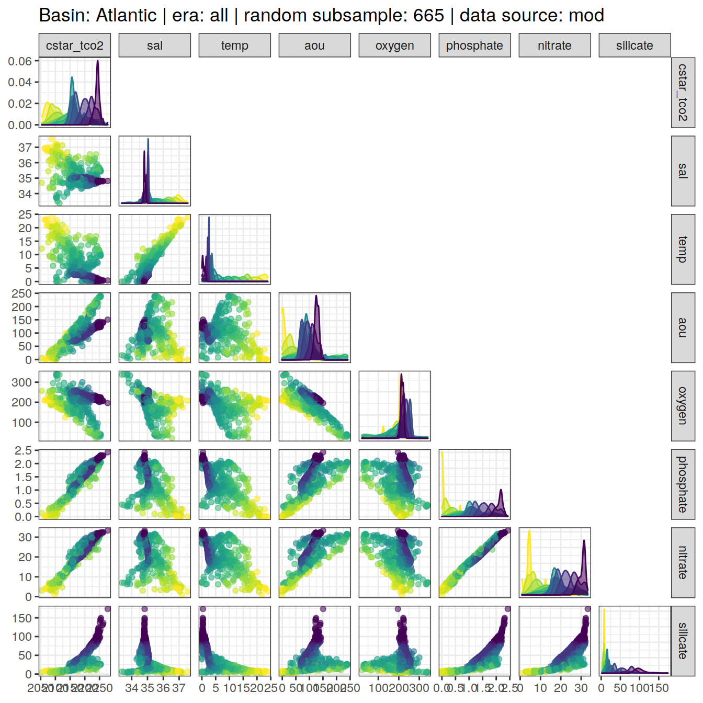

eMLR - assumption testing
Jens Daniel Müller
03 June, 2021
Last updated: 2021-06-03
Checks: 7 0
Knit directory: emlr_obs_v_XXX/
This reproducible R Markdown analysis was created with workflowr (version 1.6.2). The Checks tab describes the reproducibility checks that were applied when the results were created. The Past versions tab lists the development history.
Great! Since the R Markdown file has been committed to the Git repository, you know the exact version of the code that produced these results.
Great job! The global environment was empty. Objects defined in the global environment can affect the analysis in your R Markdown file in unknown ways. For reproduciblity it’s best to always run the code in an empty environment.
The command set.seed(20200707) was run prior to running the code in the R Markdown file. Setting a seed ensures that any results that rely on randomness, e.g. subsampling or permutations, are reproducible.
Great job! Recording the operating system, R version, and package versions is critical for reproducibility.
Nice! There were no cached chunks for this analysis, so you can be confident that you successfully produced the results during this run.
Great job! Using relative paths to the files within your workflowr project makes it easier to run your code on other machines.
Great! You are using Git for version control. Tracking code development and connecting the code version to the results is critical for reproducibility.
The results in this page were generated with repository version 315710b. See the Past versions tab to see a history of the changes made to the R Markdown and HTML files.
Note that you need to be careful to ensure that all relevant files for the analysis have been committed to Git prior to generating the results (you can use wflow_publish or wflow_git_commit). workflowr only checks the R Markdown file, but you know if there are other scripts or data files that it depends on. Below is the status of the Git repository when the results were generated:
Ignored files:
Ignored: .Rhistory
Ignored: .Rproj.user/
Untracked files:
Untracked: .Rprofile
Untracked: .gitattributes
Untracked: .gitignore
Untracked: Cant_eMLR.Rproj
Untracked: README.md
Untracked: _workflowr.yml
Untracked: analysis/_site.yml
Untracked: code/
Untracked: data/
Note that any generated files, e.g. HTML, png, CSS, etc., are not included in this status report because it is ok for generated content to have uncommitted changes.
These are the previous versions of the repository in which changes were made to the R Markdown (analysis/eMLR_assumption_testing.Rmd) and HTML (docs/eMLR_assumption_testing.html) files. If you’ve configured a remote Git repository (see ?wflow_git_remote), click on the hyperlinks in the table below to view the files as they were in that past version.
| File | Version | Author | Date | Message |
|---|---|---|---|---|
| html | 315710b | jens-daniel-mueller | 2021-06-03 | include anomalous changes |
| html | be90356 | jens-daniel-mueller | 2021-06-02 | Build site. |
| html | d37a85d | jens-daniel-mueller | 2021-05-31 | Build site. |
| html | 4b7a5ee | jens-daniel-mueller | 2021-05-28 | Build site. |
| html | 12b455a | jens-daniel-mueller | 2021-05-27 | Build site. |
| Rmd | ee13efb | jens-daniel-mueller | 2021-05-27 | optional source of local params fully implemented |
| html | 8c736a6 | jens-daniel-mueller | 2021-05-27 | Build site. |
| Rmd | dc8e4e1 | jens-daniel-mueller | 2021-05-27 | optional source of local params implemented |
| html | 25bd183 | jens-daniel-mueller | 2021-05-26 | Build site. |
| html | b79cb2d | jens-daniel-mueller | 2021-05-20 | Build site. |
| html | 62bd574 | jens-daniel-mueller | 2021-05-20 | Build site. |
| html | 7c56c39 | jens-daniel-mueller | 2021-05-19 | Build site. |
| html | 0de759e | jens-daniel-mueller | 2021-05-13 | Build site. |
| html | 52e7583 | jens-daniel-mueller | 2021-05-12 | Build site. |
| html | 969e631 | jens-daniel-mueller | 2021-05-12 | Build site. |
| html | d2a83bc | jens-daniel-mueller | 2021-04-16 | Build site. |
| html | c0a47df | jens-daniel-mueller | 2021-04-16 | Build site. |
| html | 50290e8 | jens-daniel-mueller | 2021-04-16 | overlapping eras |
| html | a00ec94 | jens-daniel-mueller | 2021-04-16 | Build site. |
| html | b6fe355 | jens-daniel-mueller | 2021-04-16 | Build site. |
| html | 81b7c6d | jens-daniel-mueller | 2021-04-16 | Build site. |
| html | ddec5b7 | jens-daniel-mueller | 2021-04-15 | Build site. |
| html | 29edae5 | jens-daniel-mueller | 2021-04-14 | Build site. |
| html | 099d566 | jens-daniel-mueller | 2021-04-14 | Build site. |
| html | bb44686 | jens-daniel-mueller | 2021-04-14 | Build site. |
| html | bf40480 | jens-daniel-mueller | 2021-04-13 | Build site. |
| html | 9f31fe3 | jens-daniel-mueller | 2021-04-13 | Build site. |
| Rmd | 80e1ee3 | jens-daniel-mueller | 2021-04-13 | rerun post-2000 with model data |
| html | c98be84 | jens-daniel-mueller | 2021-04-13 | Build site. |
| html | ea17c90 | jens-daniel-mueller | 2021-04-09 | Build site. |
| Rmd | 4d61e3d | jens-daniel-mueller | 2021-04-09 | included model data |
| html | 338dd3c | jens-daniel-mueller | 2021-04-09 | Build site. |
| html | a79ca2c | jens-daniel-mueller | 2021-04-09 | included model data |
| html | 7831fd3 | jens-daniel-mueller | 2021-04-09 | Build site. |
| html | 20b26d4 | jens-daniel-mueller | 2021-04-08 | Build site. |
| html | c0895f8 | jens-daniel-mueller | 2021-04-07 | Build site. |
| html | 156d5b7 | jens-daniel-mueller | 2021-04-07 | Build site. |
| html | eb827c9 | jens-daniel-mueller | 2021-04-07 | Build site. |
| Rmd | 49be8ed | jens-daniel-mueller | 2021-03-26 | included model data |
| html | ab5c8cf | jens-daniel-mueller | 2021-03-24 | Build site. |
| Rmd | da3c481 | jens-daniel-mueller | 2021-03-24 | included model data |
| html | 19faa17 | jens-daniel-mueller | 2021-03-24 | Build site. |
| Rmd | ae3b4d7 | jens-daniel-mueller | 2021-03-24 | included model data |
| html | 03b6009 | jens-daniel-mueller | 2021-03-23 | removed before copying template |
| html | 98d4a6d | jens-daniel-mueller | 2021-03-23 | Build site. |
| html | f155edd | jens-daniel-mueller | 2021-03-23 | Build site. |
| html | 380d215 | jens-daniel-mueller | 2021-03-21 | Build site. |
| html | 33b385b | jens-daniel-mueller | 2021-03-20 | Build site. |
| html | 330dcd0 | jens-daniel-mueller | 2021-03-20 | Build site. |
| html | 83a13de | jens-daniel-mueller | 2021-03-20 | Build site. |
| html | cf98c6d | jens-daniel-mueller | 2021-03-16 | Build site. |
| html | a1d52ff | jens-daniel-mueller | 2021-03-15 | Build site. |
| html | 0bade3b | jens-daniel-mueller | 2021-03-15 | Build site. |
| html | 27c1f4b | jens-daniel-mueller | 2021-03-14 | Build site. |
| html | af75ebf | jens-daniel-mueller | 2021-03-14 | Build site. |
| html | 5017709 | jens-daniel-mueller | 2021-03-11 | Build site. |
| html | 585b07f | jens-daniel-mueller | 2021-03-11 | Build site. |
| html | 6482ed7 | jens-daniel-mueller | 2021-03-11 | Build site. |
| html | 85a5ed2 | jens-daniel-mueller | 2021-03-10 | Build site. |
| html | 00688a1 | jens-daniel-mueller | 2021-03-05 | Build site. |
| html | 6c0bec6 | jens-daniel-mueller | 2021-03-05 | Build site. |
| html | 3c2ec33 | jens-daniel-mueller | 2021-03-05 | Build site. |
| html | af70b94 | jens-daniel-mueller | 2021-03-04 | Build site. |
| html | 86406d5 | jens-daniel-mueller | 2021-02-24 | Build site. |
| html | 3d3b4cc | jens-daniel-mueller | 2021-02-23 | Build site. |
| html | 7b672f7 | jens-daniel-mueller | 2021-01-11 | Build site. |
| html | 33ba23c | jens-daniel-mueller | 2021-01-07 | Build site. |
| html | 318609d | jens-daniel-mueller | 2020-12-23 | adapted more variable predictor selection |
| html | 9d0b2d0 | jens-daniel-mueller | 2020-12-23 | Build site. |
| html | 0aa2b50 | jens-daniel-mueller | 2020-12-23 | remove html before duplication |
| html | 39113c3 | jens-daniel-mueller | 2020-12-23 | Build site. |
| html | 2886da0 | jens-daniel-mueller | 2020-12-19 | Build site. |
| html | 02f0ee9 | jens-daniel-mueller | 2020-12-18 | cleaned up for copying template |
| html | 965dba3 | jens-daniel-mueller | 2020-12-18 | Build site. |
| html | 5d452fe | jens-daniel-mueller | 2020-12-18 | Build site. |
| Rmd | ca65bf5 | jens-daniel-mueller | 2020-12-18 | rebuild after final cleaning |
| html | 7bcb4eb | jens-daniel-mueller | 2020-12-18 | Build site. |
| html | d397028 | jens-daniel-mueller | 2020-12-18 | Build site. |
| html | 7131186 | jens-daniel-mueller | 2020-12-17 | Build site. |
| html | 22b07fb | jens-daniel-mueller | 2020-12-17 | Build site. |
| html | f3a708f | jens-daniel-mueller | 2020-12-17 | Build site. |
| html | e4ca289 | jens-daniel-mueller | 2020-12-16 | Build site. |
| html | 158fe26 | jens-daniel-mueller | 2020-12-15 | Build site. |
| html | 7a9a4cb | jens-daniel-mueller | 2020-12-15 | Build site. |
| html | 61b263c | jens-daniel-mueller | 2020-12-15 | Build site. |
| html | 4d612dd | jens-daniel-mueller | 2020-12-15 | Build site. |
| Rmd | e7e5ff1 | jens-daniel-mueller | 2020-12-15 | rebuild with eMLR target variable selection |
| html | 953caf3 | jens-daniel-mueller | 2020-12-15 | Build site. |
| html | 42daf5c | jens-daniel-mueller | 2020-12-14 | Build site. |
| Rmd | 923aa7f | jens-daniel-mueller | 2020-12-14 | rebuild with new path and auto folder creation |
| html | 984697e | jens-daniel-mueller | 2020-12-12 | Build site. |
| html | 3ebff89 | jens-daniel-mueller | 2020-12-12 | Build site. |
| html | 5d96d3c | jens-daniel-mueller | 2020-12-11 | Build site. |
| Rmd | 3d33a37 | jens-daniel-mueller | 2020-12-11 | selectable basinmask, try 5 |
| html | b01a367 | jens-daniel-mueller | 2020-12-09 | Build site. |
| html | 24a632f | jens-daniel-mueller | 2020-12-07 | Build site. |
| html | 92dca91 | jens-daniel-mueller | 2020-12-07 | Build site. |
| html | 6a8004b | jens-daniel-mueller | 2020-12-07 | Build site. |
| html | 70bf1a5 | jens-daniel-mueller | 2020-12-07 | Build site. |
| html | 7555355 | jens-daniel-mueller | 2020-12-07 | Build site. |
| html | 143d6fa | jens-daniel-mueller | 2020-12-07 | Build site. |
| Rmd | 33b1973 | jens-daniel-mueller | 2020-12-07 | run with WOCE flag 2 only |
| html | abc6818 | jens-daniel-mueller | 2020-12-03 | Build site. |
| Rmd | 992ba15 | jens-daniel-mueller | 2020-12-03 | rebuild with variable inventory depth |
| html | c8c2e7b | jens-daniel-mueller | 2020-12-03 | Build site. |
| Rmd | 83203db | jens-daniel-mueller | 2020-12-03 | calculate cant with variable inventory depth |
| html | 090e4d5 | jens-daniel-mueller | 2020-12-02 | Build site. |
| html | 7c25f7a | jens-daniel-mueller | 2020-12-02 | Build site. |
| html | ec8dc38 | jens-daniel-mueller | 2020-12-02 | Build site. |
| html | c987de1 | jens-daniel-mueller | 2020-12-02 | Build site. |
| html | f8358f8 | jens-daniel-mueller | 2020-12-02 | Build site. |
| html | b03ddb8 | jens-daniel-mueller | 2020-12-02 | Build site. |
| Rmd | 9183e8f | jens-daniel-mueller | 2020-12-02 | revised assignment of era to eras |
| html | 22d0127 | jens-daniel-mueller | 2020-12-01 | Build site. |
| html | 0ff728b | jens-daniel-mueller | 2020-12-01 | Build site. |
| html | 91435ae | jens-daniel-mueller | 2020-12-01 | Build site. |
| Rmd | 17d09be | jens-daniel-mueller | 2020-12-01 | auto eras naming |
| html | cf19652 | jens-daniel-mueller | 2020-11-30 | Build site. |
| Rmd | 2842970 | jens-daniel-mueller | 2020-11-30 | cleaned for eMLR part only |
| html | 196be51 | jens-daniel-mueller | 2020-11-30 | Build site. |
| Rmd | 7a4b015 | jens-daniel-mueller | 2020-11-30 | first rebuild on ETH server |
| Rmd | bc61ce3 | Jens Müller | 2020-11-30 | Initial commit |
| html | bc61ce3 | Jens Müller | 2020-11-30 | Initial commit |
1 Version ID
The results displayed on this site correspond to the Version_ID: v_XXX
2 Required data
Required are:
- cleaned and prepared GLODAPv2.2020 file
GLODAP <-
read_csv(paste(path_version_data,
"GLODAPv2.2020_MLR_fitting_ready.csv",
sep = ""))3 Predictor correlation
The correlation between:
- pairs of seven potential predictor variables and
- C* and seven potential predictor variables
were investigated based on:
- property-property plots and
- calculated correlation coeffcients.
3.1 Correlation plots
For an overview, a random subset of data from all eras was plotted separately for both basins, with color indicating neutral density slabs (high density = dark-purple color).
plot_fun <- function(df){
ggpairs(
data = df,
columns = c(params_local$MLR_target,
params_local$MLR_predictors),
upper = "blank",
ggplot2::aes(col = gamma_slab, fill = gamma_slab, alpha = 0.01)
) +
scale_fill_viridis_d(direction = -1) +
scale_color_viridis_d(direction = -1) +
labs(title = paste(
"Basin:",
unique(df$basin),
"| era: all | random subsample:",
nrow(df),
"| data source:",
unique(df$data_source)
))
}
GLODAP %>%
slice_sample(n = 5e3) %>%
group_split(basin, data_source) %>%
map(plot_fun)[[1]]
| Version | Author | Date |
|---|---|---|
| 315710b | jens-daniel-mueller | 2021-06-03 |
| be90356 | jens-daniel-mueller | 2021-06-02 |
| d37a85d | jens-daniel-mueller | 2021-05-31 |
| 4b7a5ee | jens-daniel-mueller | 2021-05-28 |
| 25bd183 | jens-daniel-mueller | 2021-05-26 |
| 62bd574 | jens-daniel-mueller | 2021-05-20 |
| 7c56c39 | jens-daniel-mueller | 2021-05-19 |
| 52e7583 | jens-daniel-mueller | 2021-05-12 |
| 969e631 | jens-daniel-mueller | 2021-05-12 |
| d2a83bc | jens-daniel-mueller | 2021-04-16 |
| c0a47df | jens-daniel-mueller | 2021-04-16 |
| 50290e8 | jens-daniel-mueller | 2021-04-16 |
| a00ec94 | jens-daniel-mueller | 2021-04-16 |
| b6fe355 | jens-daniel-mueller | 2021-04-16 |
| 81b7c6d | jens-daniel-mueller | 2021-04-16 |
| ddec5b7 | jens-daniel-mueller | 2021-04-15 |
| 29edae5 | jens-daniel-mueller | 2021-04-14 |
| 9f31fe3 | jens-daniel-mueller | 2021-04-13 |
| ea17c90 | jens-daniel-mueller | 2021-04-09 |
| 338dd3c | jens-daniel-mueller | 2021-04-09 |
| a79ca2c | jens-daniel-mueller | 2021-04-09 |
| eb827c9 | jens-daniel-mueller | 2021-04-07 |
| ab5c8cf | jens-daniel-mueller | 2021-03-24 |
| 03b6009 | jens-daniel-mueller | 2021-03-23 |
| 98d4a6d | jens-daniel-mueller | 2021-03-23 |
| 83a13de | jens-daniel-mueller | 2021-03-20 |
| cf98c6d | jens-daniel-mueller | 2021-03-16 |
| a1d52ff | jens-daniel-mueller | 2021-03-15 |
| 0bade3b | jens-daniel-mueller | 2021-03-15 |
| 27c1f4b | jens-daniel-mueller | 2021-03-14 |
| af75ebf | jens-daniel-mueller | 2021-03-14 |
| 5017709 | jens-daniel-mueller | 2021-03-11 |
| 585b07f | jens-daniel-mueller | 2021-03-11 |
| 85a5ed2 | jens-daniel-mueller | 2021-03-10 |
| 6c0bec6 | jens-daniel-mueller | 2021-03-05 |
| af70b94 | jens-daniel-mueller | 2021-03-04 |
| 7b672f7 | jens-daniel-mueller | 2021-01-11 |
| 33ba23c | jens-daniel-mueller | 2021-01-07 |
| 318609d | jens-daniel-mueller | 2020-12-23 |
| 9d0b2d0 | jens-daniel-mueller | 2020-12-23 |
| 0aa2b50 | jens-daniel-mueller | 2020-12-23 |
| 2886da0 | jens-daniel-mueller | 2020-12-19 |
| 02f0ee9 | jens-daniel-mueller | 2020-12-18 |
| 7bcb4eb | jens-daniel-mueller | 2020-12-18 |
| 158fe26 | jens-daniel-mueller | 2020-12-15 |
| 7a9a4cb | jens-daniel-mueller | 2020-12-15 |
| 61b263c | jens-daniel-mueller | 2020-12-15 |
| 4d612dd | jens-daniel-mueller | 2020-12-15 |
| 984697e | jens-daniel-mueller | 2020-12-12 |
| 3ebff89 | jens-daniel-mueller | 2020-12-12 |
| 5d96d3c | jens-daniel-mueller | 2020-12-11 |
[[2]]
| Version | Author | Date |
|---|---|---|
| 315710b | jens-daniel-mueller | 2021-06-03 |
| d37a85d | jens-daniel-mueller | 2021-05-31 |
| 4b7a5ee | jens-daniel-mueller | 2021-05-28 |
| 25bd183 | jens-daniel-mueller | 2021-05-26 |
| 62bd574 | jens-daniel-mueller | 2021-05-20 |
| 7c56c39 | jens-daniel-mueller | 2021-05-19 |
| 52e7583 | jens-daniel-mueller | 2021-05-12 |
| 969e631 | jens-daniel-mueller | 2021-05-12 |
| d2a83bc | jens-daniel-mueller | 2021-04-16 |
| c0a47df | jens-daniel-mueller | 2021-04-16 |
| 50290e8 | jens-daniel-mueller | 2021-04-16 |
| a00ec94 | jens-daniel-mueller | 2021-04-16 |
| b6fe355 | jens-daniel-mueller | 2021-04-16 |
| 81b7c6d | jens-daniel-mueller | 2021-04-16 |
| ddec5b7 | jens-daniel-mueller | 2021-04-15 |
| 29edae5 | jens-daniel-mueller | 2021-04-14 |
| 9f31fe3 | jens-daniel-mueller | 2021-04-13 |
| ea17c90 | jens-daniel-mueller | 2021-04-09 |
| 338dd3c | jens-daniel-mueller | 2021-04-09 |
| a79ca2c | jens-daniel-mueller | 2021-04-09 |
| eb827c9 | jens-daniel-mueller | 2021-04-07 |
| ab5c8cf | jens-daniel-mueller | 2021-03-24 |
| 03b6009 | jens-daniel-mueller | 2021-03-23 |
| 98d4a6d | jens-daniel-mueller | 2021-03-23 |
| 83a13de | jens-daniel-mueller | 2021-03-20 |
| cf98c6d | jens-daniel-mueller | 2021-03-16 |
| a1d52ff | jens-daniel-mueller | 2021-03-15 |
| 0bade3b | jens-daniel-mueller | 2021-03-15 |
| 27c1f4b | jens-daniel-mueller | 2021-03-14 |
| af75ebf | jens-daniel-mueller | 2021-03-14 |
| 5017709 | jens-daniel-mueller | 2021-03-11 |
| 585b07f | jens-daniel-mueller | 2021-03-11 |
| 85a5ed2 | jens-daniel-mueller | 2021-03-10 |
| 6c0bec6 | jens-daniel-mueller | 2021-03-05 |
| af70b94 | jens-daniel-mueller | 2021-03-04 |
| 7b672f7 | jens-daniel-mueller | 2021-01-11 |
| 33ba23c | jens-daniel-mueller | 2021-01-07 |
| 318609d | jens-daniel-mueller | 2020-12-23 |
| 9d0b2d0 | jens-daniel-mueller | 2020-12-23 |
| 0aa2b50 | jens-daniel-mueller | 2020-12-23 |
| 2886da0 | jens-daniel-mueller | 2020-12-19 |
| 02f0ee9 | jens-daniel-mueller | 2020-12-18 |
| 7bcb4eb | jens-daniel-mueller | 2020-12-18 |
| 158fe26 | jens-daniel-mueller | 2020-12-15 |
| 7a9a4cb | jens-daniel-mueller | 2020-12-15 |
| 61b263c | jens-daniel-mueller | 2020-12-15 |
| 4d612dd | jens-daniel-mueller | 2020-12-15 |
| 984697e | jens-daniel-mueller | 2020-12-12 |
| 3ebff89 | jens-daniel-mueller | 2020-12-12 |
| 5d96d3c | jens-daniel-mueller | 2020-12-11 |
[[3]]
| Version | Author | Date |
|---|---|---|
| 315710b | jens-daniel-mueller | 2021-06-03 |
| be90356 | jens-daniel-mueller | 2021-06-02 |
| d37a85d | jens-daniel-mueller | 2021-05-31 |
| 4b7a5ee | jens-daniel-mueller | 2021-05-28 |
| 25bd183 | jens-daniel-mueller | 2021-05-26 |
| 62bd574 | jens-daniel-mueller | 2021-05-20 |
| 7c56c39 | jens-daniel-mueller | 2021-05-19 |
| 52e7583 | jens-daniel-mueller | 2021-05-12 |
| 969e631 | jens-daniel-mueller | 2021-05-12 |
| d2a83bc | jens-daniel-mueller | 2021-04-16 |
| c0a47df | jens-daniel-mueller | 2021-04-16 |
| 50290e8 | jens-daniel-mueller | 2021-04-16 |
| a00ec94 | jens-daniel-mueller | 2021-04-16 |
| b6fe355 | jens-daniel-mueller | 2021-04-16 |
| 81b7c6d | jens-daniel-mueller | 2021-04-16 |
| ddec5b7 | jens-daniel-mueller | 2021-04-15 |
| 29edae5 | jens-daniel-mueller | 2021-04-14 |
| 099d566 | jens-daniel-mueller | 2021-04-14 |
| bb44686 | jens-daniel-mueller | 2021-04-14 |
| bf40480 | jens-daniel-mueller | 2021-04-13 |
| 9f31fe3 | jens-daniel-mueller | 2021-04-13 |
| ea17c90 | jens-daniel-mueller | 2021-04-09 |
| 338dd3c | jens-daniel-mueller | 2021-04-09 |
| a79ca2c | jens-daniel-mueller | 2021-04-09 |
| eb827c9 | jens-daniel-mueller | 2021-04-07 |
| ab5c8cf | jens-daniel-mueller | 2021-03-24 |
| 0aa2b50 | jens-daniel-mueller | 2020-12-23 |
| 2886da0 | jens-daniel-mueller | 2020-12-19 |
| 02f0ee9 | jens-daniel-mueller | 2020-12-18 |
| 7bcb4eb | jens-daniel-mueller | 2020-12-18 |
| 158fe26 | jens-daniel-mueller | 2020-12-15 |
| 7a9a4cb | jens-daniel-mueller | 2020-12-15 |
| 61b263c | jens-daniel-mueller | 2020-12-15 |
| 4d612dd | jens-daniel-mueller | 2020-12-15 |
| 984697e | jens-daniel-mueller | 2020-12-12 |
| 3ebff89 | jens-daniel-mueller | 2020-12-12 |
| 5d96d3c | jens-daniel-mueller | 2020-12-11 |
[[4]]
| Version | Author | Date |
|---|---|---|
| 315710b | jens-daniel-mueller | 2021-06-03 |
| d37a85d | jens-daniel-mueller | 2021-05-31 |
| 4b7a5ee | jens-daniel-mueller | 2021-05-28 |
| 25bd183 | jens-daniel-mueller | 2021-05-26 |
| 62bd574 | jens-daniel-mueller | 2021-05-20 |
| 7c56c39 | jens-daniel-mueller | 2021-05-19 |
| 52e7583 | jens-daniel-mueller | 2021-05-12 |
| 969e631 | jens-daniel-mueller | 2021-05-12 |
| d2a83bc | jens-daniel-mueller | 2021-04-16 |
| c0a47df | jens-daniel-mueller | 2021-04-16 |
| 50290e8 | jens-daniel-mueller | 2021-04-16 |
| a00ec94 | jens-daniel-mueller | 2021-04-16 |
| b6fe355 | jens-daniel-mueller | 2021-04-16 |
| 81b7c6d | jens-daniel-mueller | 2021-04-16 |
| ddec5b7 | jens-daniel-mueller | 2021-04-15 |
| 29edae5 | jens-daniel-mueller | 2021-04-14 |
| 099d566 | jens-daniel-mueller | 2021-04-14 |
| bb44686 | jens-daniel-mueller | 2021-04-14 |
| bf40480 | jens-daniel-mueller | 2021-04-13 |
| 9f31fe3 | jens-daniel-mueller | 2021-04-13 |
| ea17c90 | jens-daniel-mueller | 2021-04-09 |
| 338dd3c | jens-daniel-mueller | 2021-04-09 |
| a79ca2c | jens-daniel-mueller | 2021-04-09 |
| eb827c9 | jens-daniel-mueller | 2021-04-07 |
| ab5c8cf | jens-daniel-mueller | 2021-03-24 |
| 984697e | jens-daniel-mueller | 2020-12-12 |
| 3ebff89 | jens-daniel-mueller | 2020-12-12 |
| 5d96d3c | jens-daniel-mueller | 2020-12-11 |
GLODAP <- GLODAP %>%
filter(data_source == "obs") %>%
select(-data_source)Individual correlation plots for each basin, era and neutral density (gamma) slab are available at:
/nfs/kryo/work/jenmueller/emlr_cant/observations/v_XXX/figures/Observations_correlation/
if (params_local$plot_all_figures == "y") {
for (i_basin in unique(GLODAP$basin)) {
for (i_era in unique(GLODAP$era)) {
# i_basin <- unique(GLODAP$basin)[1]
# i_era <- unique(GLODAP$era)[1]
GLODAP_basin_era <- GLODAP %>%
filter(basin == i_basin,
era == i_era)
for (i_gamma_slab in unique(GLODAP_basin_era$gamma_slab)) {
# i_gamma_slab <- unique(GLODAP_basin_era$gamma_slab)[5]
GLODAP_highlight <- GLODAP_basin_era %>%
mutate(gamma_highlight = if_else(gamma_slab == i_gamma_slab,
"in", "out")) %>%
arrange(desc(gamma_highlight))
p <- GLODAP_highlight %>%
ggpairs(
columns = c(params_local$MLR_target,
params_local$MLR_predictors),
ggplot2::aes(
col = gamma_highlight,
fill = gamma_highlight,
alpha = 0.01
)
) +
scale_fill_manual(values = c("red", "grey")) +
scale_color_manual(values = c("red", "grey")) +
labs(
title = paste(
i_era,
"|",
i_basin,
"| Gamma slab",
i_gamma_slab,
"| # obs total",
nrow(GLODAP_basin_era),
"| # obs slab",
nrow(GLODAP_highlight %>%
filter(gamma_highlight == "in"))
)
)
png(
filename = paste(
path_version_figures,
"Observations_correlation/",
paste(
"Predictor_correlation",
i_era,
i_basin,
i_gamma_slab,
".png",
sep = "_"
),
sep = ""),
width = 12,
height = 12,
units = "in",
res = 300
)
print(p)
dev.off()
}
}
}
}3.2 Correlation assesment
3.2.1 Calculation of correlation coeffcients
Correlation coefficients were calculated individually within each slabs, era and basin.
for (i_basin in unique(GLODAP$basin)) {
for (i_era in unique(GLODAP$era)) {
# i_basin <- unique(GLODAP$basin)[1]
# i_era <- unique(GLODAP$era)[1]
GLODAP_basin_era <- GLODAP %>%
filter(basin == i_basin,
era == i_era) %>%
select(basin,
era,
gamma_slab,
params_local$MLR_target,
params_local$MLR_predictors)
for (i_gamma_slab in unique(GLODAP_basin_era$gamma_slab)) {
# i_gamma_slab <- unique(GLODAP_basin_era$gamma_slab)[5]
print(i_gamma_slab)
GLODAP_basin_era_slab <- GLODAP_basin_era %>%
filter(gamma_slab == i_gamma_slab)
# calculate correlation table
cor_target_predictor_temp <- GLODAP_basin_era_slab %>%
select(-c(basin, era, gamma_slab)) %>%
correlate() %>%
focus(params_local$MLR_target) %>%
mutate(basin = i_basin,
era = i_era,
gamma_slab = i_gamma_slab)
if (exists("cor_target_predictor")) {
cor_target_predictor <-
bind_rows(cor_target_predictor, cor_target_predictor_temp)
}
if (!exists("cor_target_predictor")) {
cor_target_predictor <- cor_target_predictor_temp
}
cor_predictors_temp <- GLODAP_basin_era_slab %>%
select(-c(basin, era, gamma_slab)) %>%
correlate() %>%
shave %>%
stretch() %>%
filter(!is.na(r),
x != params_local$MLR_target,
y != params_local$MLR_target) %>%
mutate(pair = paste(x, y, sep = " + ")) %>%
select(-c(x, y)) %>%
mutate(basin = i_basin,
era = i_era,
gamma_slab = i_gamma_slab)
if (exists("cor_predictors")) {
cor_predictors <- bind_rows(cor_predictors, cor_predictors_temp)
}
if (!exists("cor_predictors")) {
cor_predictors <- cor_predictors_temp
}
}
}
}
rm(cor_predictors_temp, cor_target_predictor_temp,
i_gamma_slab, i_era, i_basin,
GLODAP_basin_era, GLODAP_basin_era_slab)3.2.2 Predictor pairs
Below, the range of correlations coefficients for each predictor pair is plotted per basin (facet) and density slab (color). Note that the range indicates the min and max values of in total 3 calculated coefficients (one per era).
# calculate min, max, mean across all eras
cor_predictors_stats <- cor_predictors %>%
group_by(pair, basin, gamma_slab) %>%
summarise(mean_r = mean(r),
min_r = min(r),
max_r = max(r)) %>%
ungroup()
# plot figure
cor_predictors_stats %>%
mutate(pair = reorder(pair, mean_r)) %>%
ggplot() +
geom_vline(xintercept = c(-0.9, 0.9), col = "red") +
geom_vline(xintercept = 0) +
geom_linerange(
aes(y = pair, xmin = min_r, xmax = max_r, col = gamma_slab),
position = position_dodge(width = 0.6)) +
facet_wrap(~basin) +
scale_color_viridis_d(direction = -1) +
labs(x = "correlation coefficient", y = "") +
theme(legend.position = "top")
| Version | Author | Date |
|---|---|---|
| 315710b | jens-daniel-mueller | 2021-06-03 |
| d37a85d | jens-daniel-mueller | 2021-05-31 |
| 25bd183 | jens-daniel-mueller | 2021-05-26 |
| 62bd574 | jens-daniel-mueller | 2021-05-20 |
| 7c56c39 | jens-daniel-mueller | 2021-05-19 |
| 52e7583 | jens-daniel-mueller | 2021-05-12 |
| 969e631 | jens-daniel-mueller | 2021-05-12 |
| d2a83bc | jens-daniel-mueller | 2021-04-16 |
| c0a47df | jens-daniel-mueller | 2021-04-16 |
| 50290e8 | jens-daniel-mueller | 2021-04-16 |
| b6fe355 | jens-daniel-mueller | 2021-04-16 |
| 81b7c6d | jens-daniel-mueller | 2021-04-16 |
| ddec5b7 | jens-daniel-mueller | 2021-04-15 |
| 29edae5 | jens-daniel-mueller | 2021-04-14 |
| 099d566 | jens-daniel-mueller | 2021-04-14 |
| bb44686 | jens-daniel-mueller | 2021-04-14 |
| bf40480 | jens-daniel-mueller | 2021-04-13 |
| 9f31fe3 | jens-daniel-mueller | 2021-04-13 |
| 338dd3c | jens-daniel-mueller | 2021-04-09 |
| a79ca2c | jens-daniel-mueller | 2021-04-09 |
| eb827c9 | jens-daniel-mueller | 2021-04-07 |
| 19faa17 | jens-daniel-mueller | 2021-03-24 |
| 03b6009 | jens-daniel-mueller | 2021-03-23 |
| 98d4a6d | jens-daniel-mueller | 2021-03-23 |
| f155edd | jens-daniel-mueller | 2021-03-23 |
| 83a13de | jens-daniel-mueller | 2021-03-20 |
| cf98c6d | jens-daniel-mueller | 2021-03-16 |
| a1d52ff | jens-daniel-mueller | 2021-03-15 |
| 0bade3b | jens-daniel-mueller | 2021-03-15 |
| 27c1f4b | jens-daniel-mueller | 2021-03-14 |
| af75ebf | jens-daniel-mueller | 2021-03-14 |
| 5017709 | jens-daniel-mueller | 2021-03-11 |
| 585b07f | jens-daniel-mueller | 2021-03-11 |
| 85a5ed2 | jens-daniel-mueller | 2021-03-10 |
| 6c0bec6 | jens-daniel-mueller | 2021-03-05 |
| 7b672f7 | jens-daniel-mueller | 2021-01-11 |
| 33ba23c | jens-daniel-mueller | 2021-01-07 |
| 318609d | jens-daniel-mueller | 2020-12-23 |
| 9d0b2d0 | jens-daniel-mueller | 2020-12-23 |
| 0aa2b50 | jens-daniel-mueller | 2020-12-23 |
| 2886da0 | jens-daniel-mueller | 2020-12-19 |
| 02f0ee9 | jens-daniel-mueller | 2020-12-18 |
| 158fe26 | jens-daniel-mueller | 2020-12-15 |
| 984697e | jens-daniel-mueller | 2020-12-12 |
| 3ebff89 | jens-daniel-mueller | 2020-12-12 |
| 5d96d3c | jens-daniel-mueller | 2020-12-11 |
| 24a632f | jens-daniel-mueller | 2020-12-07 |
| 6a8004b | jens-daniel-mueller | 2020-12-07 |
| 70bf1a5 | jens-daniel-mueller | 2020-12-07 |
| 7555355 | jens-daniel-mueller | 2020-12-07 |
| 143d6fa | jens-daniel-mueller | 2020-12-07 |
| 0ff728b | jens-daniel-mueller | 2020-12-01 |
| 91435ae | jens-daniel-mueller | 2020-12-01 |
| 196be51 | jens-daniel-mueller | 2020-11-30 |
| bc61ce3 | Jens Müller | 2020-11-30 |
# print table
kable(cor_predictors_stats) %>%
add_header_above() %>%
kable_styling() %>%
scroll_box(width = "100%", height = "400px")| pair | basin | gamma_slab | mean_r | min_r | max_r |
|---|---|---|---|---|---|
| aou + nitrate | Atlantic | (-Inf,26] | 0.8889561 | 0.8836707 | 0.8942415 |
| aou + nitrate | Atlantic | (26,26.5] | 0.8796004 | 0.8791264 | 0.8800745 |
| aou + nitrate | Atlantic | (26.5,26.75] | 0.9390674 | 0.9390643 | 0.9390704 |
| aou + nitrate | Atlantic | (26.75,27] | 0.9205141 | 0.9172569 | 0.9237712 |
| aou + nitrate | Atlantic | (27,27.25] | 0.8601037 | 0.8581132 | 0.8620941 |
| aou + nitrate | Atlantic | (27.25,27.5] | 0.7801058 | 0.7535460 | 0.8066655 |
| aou + nitrate | Atlantic | (27.5,27.75] | 0.8701933 | 0.8671945 | 0.8731921 |
| aou + nitrate | Atlantic | (27.75,27.85] | 0.9308769 | 0.9109147 | 0.9508392 |
| aou + nitrate | Atlantic | (27.85,27.95] | 0.9339988 | 0.9183524 | 0.9496453 |
| aou + nitrate | Atlantic | (27.95,28.05] | 0.9507495 | 0.9441073 | 0.9573917 |
| aou + nitrate | Atlantic | (28.05,28.1] | 0.9563947 | 0.9531731 | 0.9596164 |
| aou + nitrate | Atlantic | (28.1,28.15] | 0.9739371 | 0.9720140 | 0.9758601 |
| aou + nitrate | Atlantic | (28.15,28.2] | 0.9830357 | 0.9736176 | 0.9924538 |
| aou + nitrate | Atlantic | (28.2, Inf] | 0.8178868 | 0.8146033 | 0.8211704 |
| aou + nitrate | Indo-Pacific | (-Inf,26] | 0.9050824 | 0.8917555 | 0.9184093 |
| aou + nitrate | Indo-Pacific | (26,26.5] | 0.8999241 | 0.8980806 | 0.9017676 |
| aou + nitrate | Indo-Pacific | (26.5,26.75] | 0.9130991 | 0.9109456 | 0.9152525 |
| aou + nitrate | Indo-Pacific | (26.75,27] | 0.9402892 | 0.9393681 | 0.9412103 |
| aou + nitrate | Indo-Pacific | (27,27.25] | 0.9629280 | 0.9623940 | 0.9634620 |
| aou + nitrate | Indo-Pacific | (27.25,27.5] | 0.9670087 | 0.9618542 | 0.9721632 |
| aou + nitrate | Indo-Pacific | (27.5,27.75] | 0.9686051 | 0.9656239 | 0.9715863 |
| aou + nitrate | Indo-Pacific | (27.75,27.85] | 0.9785176 | 0.9785073 | 0.9785278 |
| aou + nitrate | Indo-Pacific | (27.85,27.95] | 0.9770355 | 0.9725978 | 0.9814732 |
| aou + nitrate | Indo-Pacific | (27.95,28.05] | 0.9662074 | 0.9581904 | 0.9742243 |
| aou + nitrate | Indo-Pacific | (28.05,28.1] | 0.9728944 | 0.9640972 | 0.9816915 |
| aou + nitrate | Indo-Pacific | (28.1,28.2] | 0.9678384 | 0.9607794 | 0.9748974 |
| aou + nitrate | Indo-Pacific | (28.2,28.3] | 0.2548492 | 0.1855012 | 0.3241971 |
| aou + nitrate | Indo-Pacific | (28.3,28.4] | 0.3604565 | 0.2148926 | 0.5060205 |
| aou + nitrate | Indo-Pacific | (28.4, Inf] | 0.3060965 | -0.3026397 | 0.9148327 |
| aou + phosphate | Atlantic | (-Inf,26] | 0.3312212 | 0.0995678 | 0.5628746 |
| aou + phosphate | Atlantic | (26,26.5] | 0.6956980 | 0.6861142 | 0.7052817 |
| aou + phosphate | Atlantic | (26.5,26.75] | 0.8527688 | 0.8496053 | 0.8559323 |
| aou + phosphate | Atlantic | (26.75,27] | 0.8501782 | 0.8426674 | 0.8576891 |
| aou + phosphate | Atlantic | (27,27.25] | 0.7999724 | 0.7860022 | 0.8139427 |
| aou + phosphate | Atlantic | (27.25,27.5] | 0.7253119 | 0.6852907 | 0.7653331 |
| aou + phosphate | Atlantic | (27.5,27.75] | 0.8450369 | 0.8411519 | 0.8489219 |
| aou + phosphate | Atlantic | (27.75,27.85] | 0.9128375 | 0.8872344 | 0.9384405 |
| aou + phosphate | Atlantic | (27.85,27.95] | 0.9251371 | 0.9083166 | 0.9419577 |
| aou + phosphate | Atlantic | (27.95,28.05] | 0.9466640 | 0.9393891 | 0.9539390 |
| aou + phosphate | Atlantic | (28.05,28.1] | 0.9507971 | 0.9471921 | 0.9544022 |
| aou + phosphate | Atlantic | (28.1,28.15] | 0.9687753 | 0.9678934 | 0.9696572 |
| aou + phosphate | Atlantic | (28.15,28.2] | 0.9825808 | 0.9727988 | 0.9923628 |
| aou + phosphate | Atlantic | (28.2, Inf] | 0.8128051 | 0.8098637 | 0.8157465 |
| aou + phosphate | Indo-Pacific | (-Inf,26] | 0.9281094 | 0.9063233 | 0.9498955 |
| aou + phosphate | Indo-Pacific | (26,26.5] | 0.9514636 | 0.9503924 | 0.9525348 |
| aou + phosphate | Indo-Pacific | (26.5,26.75] | 0.9451799 | 0.9417301 | 0.9486296 |
| aou + phosphate | Indo-Pacific | (26.75,27] | 0.9495382 | 0.9471181 | 0.9519582 |
| aou + phosphate | Indo-Pacific | (27,27.25] | 0.9713597 | 0.9678397 | 0.9748797 |
| aou + phosphate | Indo-Pacific | (27.25,27.5] | 0.9781631 | 0.9774700 | 0.9788562 |
| aou + phosphate | Indo-Pacific | (27.5,27.75] | 0.9789335 | 0.9776349 | 0.9802320 |
| aou + phosphate | Indo-Pacific | (27.75,27.85] | 0.9832082 | 0.9830877 | 0.9833287 |
| aou + phosphate | Indo-Pacific | (27.85,27.95] | 0.9797648 | 0.9760967 | 0.9834330 |
| aou + phosphate | Indo-Pacific | (27.95,28.05] | 0.9697716 | 0.9651340 | 0.9744091 |
| aou + phosphate | Indo-Pacific | (28.05,28.1] | 0.9744356 | 0.9688667 | 0.9800046 |
| aou + phosphate | Indo-Pacific | (28.1,28.2] | 0.9626971 | 0.9563950 | 0.9689993 |
| aou + phosphate | Indo-Pacific | (28.2,28.3] | 0.1691351 | -0.0005521 | 0.3388222 |
| aou + phosphate | Indo-Pacific | (28.3,28.4] | 0.2769232 | 0.0440035 | 0.5098430 |
| aou + phosphate | Indo-Pacific | (28.4, Inf] | 0.1813827 | -0.4716353 | 0.8344006 |
| aou + phosphate_star | Atlantic | (-Inf,26] | -0.4936785 | -0.6259821 | -0.3613749 |
| aou + phosphate_star | Atlantic | (26,26.5] | 0.2356290 | 0.2304201 | 0.2408379 |
| aou + phosphate_star | Atlantic | (26.5,26.75] | 0.3921461 | 0.3720688 | 0.4122234 |
| aou + phosphate_star | Atlantic | (26.75,27] | 0.2177920 | 0.1809460 | 0.2546381 |
| aou + phosphate_star | Atlantic | (27,27.25] | 0.1934792 | 0.0931328 | 0.2938255 |
| aou + phosphate_star | Atlantic | (27.25,27.5] | 0.2231897 | 0.1092569 | 0.3371225 |
| aou + phosphate_star | Atlantic | (27.5,27.75] | 0.5271758 | 0.5183694 | 0.5359823 |
| aou + phosphate_star | Atlantic | (27.75,27.85] | 0.6147446 | 0.5320502 | 0.6974390 |
| aou + phosphate_star | Atlantic | (27.85,27.95] | 0.6223743 | 0.5696624 | 0.6750861 |
| aou + phosphate_star | Atlantic | (27.95,28.05] | 0.7810968 | 0.7570374 | 0.8051562 |
| aou + phosphate_star | Atlantic | (28.05,28.1] | 0.8251760 | 0.8140071 | 0.8363449 |
| aou + phosphate_star | Atlantic | (28.1,28.15] | 0.8815148 | 0.8782646 | 0.8847649 |
| aou + phosphate_star | Atlantic | (28.15,28.2] | 0.9358887 | 0.8981444 | 0.9736330 |
| aou + phosphate_star | Atlantic | (28.2, Inf] | 0.4746974 | 0.4633526 | 0.4860422 |
| aou + phosphate_star | Indo-Pacific | (-Inf,26] | 0.6127533 | 0.5328073 | 0.6926994 |
| aou + phosphate_star | Indo-Pacific | (26,26.5] | 0.6365203 | 0.6328938 | 0.6401467 |
| aou + phosphate_star | Indo-Pacific | (26.5,26.75] | 0.5503543 | 0.5483427 | 0.5523660 |
| aou + phosphate_star | Indo-Pacific | (26.75,27] | 0.4756368 | 0.4561060 | 0.4951676 |
| aou + phosphate_star | Indo-Pacific | (27,27.25] | 0.1512893 | 0.1034999 | 0.1990786 |
| aou + phosphate_star | Indo-Pacific | (27.25,27.5] | -0.3523052 | -0.3991724 | -0.3054381 |
| aou + phosphate_star | Indo-Pacific | (27.5,27.75] | -0.5577809 | -0.5726247 | -0.5429371 |
| aou + phosphate_star | Indo-Pacific | (27.75,27.85] | -0.4781183 | -0.5374016 | -0.4188350 |
| aou + phosphate_star | Indo-Pacific | (27.85,27.95] | -0.1977151 | -0.2277509 | -0.1676792 |
| aou + phosphate_star | Indo-Pacific | (27.95,28.05] | 0.2052170 | 0.1728418 | 0.2375922 |
| aou + phosphate_star | Indo-Pacific | (28.05,28.1] | 0.5795513 | 0.5280063 | 0.6310962 |
| aou + phosphate_star | Indo-Pacific | (28.1,28.2] | 0.1465537 | 0.0957958 | 0.1973115 |
| aou + phosphate_star | Indo-Pacific | (28.2,28.3] | -0.7181993 | -0.7683497 | -0.6680490 |
| aou + phosphate_star | Indo-Pacific | (28.3,28.4] | -0.8681026 | -0.8972295 | -0.8389757 |
| aou + phosphate_star | Indo-Pacific | (28.4, Inf] | -0.8885683 | -0.9328648 | -0.8442718 |
| aou + silicate | Atlantic | (-Inf,26] | 0.0565356 | -0.0801566 | 0.1932278 |
| aou + silicate | Atlantic | (26,26.5] | 0.6285487 | 0.6188933 | 0.6382041 |
| aou + silicate | Atlantic | (26.5,26.75] | 0.8017194 | 0.7349011 | 0.8685377 |
| aou + silicate | Atlantic | (26.75,27] | 0.8356123 | 0.8201577 | 0.8510669 |
| aou + silicate | Atlantic | (27,27.25] | 0.7590361 | 0.7423927 | 0.7756795 |
| aou + silicate | Atlantic | (27.25,27.5] | 0.5142447 | 0.4412334 | 0.5872561 |
| aou + silicate | Atlantic | (27.5,27.75] | 0.6459447 | 0.6106365 | 0.6812529 |
| aou + silicate | Atlantic | (27.75,27.85] | 0.8232871 | 0.8118138 | 0.8347604 |
| aou + silicate | Atlantic | (27.85,27.95] | 0.8517628 | 0.8305779 | 0.8729477 |
| aou + silicate | Atlantic | (27.95,28.05] | 0.9281400 | 0.9228021 | 0.9334779 |
| aou + silicate | Atlantic | (28.05,28.1] | 0.9554316 | 0.9532573 | 0.9576060 |
| aou + silicate | Atlantic | (28.1,28.15] | 0.9677612 | 0.9670038 | 0.9685186 |
| aou + silicate | Atlantic | (28.15,28.2] | 0.9863065 | 0.9815332 | 0.9910798 |
| aou + silicate | Atlantic | (28.2, Inf] | 0.8065995 | 0.7860463 | 0.8271528 |
| aou + silicate | Indo-Pacific | (-Inf,26] | 0.7084976 | 0.6836180 | 0.7333771 |
| aou + silicate | Indo-Pacific | (26,26.5] | 0.6825656 | 0.6699764 | 0.6951549 |
| aou + silicate | Indo-Pacific | (26.5,26.75] | 0.6735929 | 0.6668741 | 0.6803116 |
| aou + silicate | Indo-Pacific | (26.75,27] | 0.7734586 | 0.7546785 | 0.7922387 |
| aou + silicate | Indo-Pacific | (27,27.25] | 0.8961922 | 0.8844363 | 0.9079481 |
| aou + silicate | Indo-Pacific | (27.25,27.5] | 0.9214992 | 0.9097257 | 0.9332727 |
| aou + silicate | Indo-Pacific | (27.5,27.75] | 0.9375581 | 0.9256510 | 0.9494651 |
| aou + silicate | Indo-Pacific | (27.75,27.85] | 0.9685766 | 0.9650328 | 0.9721204 |
| aou + silicate | Indo-Pacific | (27.85,27.95] | 0.9641377 | 0.9620651 | 0.9662103 |
| aou + silicate | Indo-Pacific | (27.95,28.05] | 0.9553478 | 0.9521435 | 0.9585521 |
| aou + silicate | Indo-Pacific | (28.05,28.1] | 0.9675476 | 0.9664716 | 0.9686236 |
| aou + silicate | Indo-Pacific | (28.1,28.2] | 0.9290629 | 0.9240180 | 0.9341077 |
| aou + silicate | Indo-Pacific | (28.2,28.3] | 0.3726649 | 0.2540006 | 0.4913291 |
| aou + silicate | Indo-Pacific | (28.3,28.4] | 0.4641141 | 0.2752576 | 0.6529705 |
| aou + silicate | Indo-Pacific | (28.4, Inf] | 0.3745362 | -0.2476309 | 0.9967033 |
| nitrate + phosphate | Atlantic | (-Inf,26] | 0.6093560 | 0.4220594 | 0.7966526 |
| nitrate + phosphate | Atlantic | (26,26.5] | 0.9167064 | 0.9165123 | 0.9169004 |
| nitrate + phosphate | Atlantic | (26.5,26.75] | 0.9713208 | 0.9691280 | 0.9735137 |
| nitrate + phosphate | Atlantic | (26.75,27] | 0.9819358 | 0.9802528 | 0.9836188 |
| nitrate + phosphate | Atlantic | (27,27.25] | 0.9882673 | 0.9867011 | 0.9898335 |
| nitrate + phosphate | Atlantic | (27.25,27.5] | 0.9918213 | 0.9914743 | 0.9921682 |
| nitrate + phosphate | Atlantic | (27.5,27.75] | 0.9928898 | 0.9907371 | 0.9950426 |
| nitrate + phosphate | Atlantic | (27.75,27.85] | 0.9940422 | 0.9921308 | 0.9959536 |
| nitrate + phosphate | Atlantic | (27.85,27.95] | 0.9907862 | 0.9876663 | 0.9939061 |
| nitrate + phosphate | Atlantic | (27.95,28.05] | 0.9921406 | 0.9896197 | 0.9946615 |
| nitrate + phosphate | Atlantic | (28.05,28.1] | 0.9922176 | 0.9906271 | 0.9938081 |
| nitrate + phosphate | Atlantic | (28.1,28.15] | 0.9941693 | 0.9933101 | 0.9950286 |
| nitrate + phosphate | Atlantic | (28.15,28.2] | 0.9977677 | 0.9972028 | 0.9983326 |
| nitrate + phosphate | Atlantic | (28.2, Inf] | 0.9941879 | 0.9937221 | 0.9946537 |
| nitrate + phosphate | Indo-Pacific | (-Inf,26] | 0.9596296 | 0.9552895 | 0.9639696 |
| nitrate + phosphate | Indo-Pacific | (26,26.5] | 0.9565850 | 0.9547093 | 0.9584607 |
| nitrate + phosphate | Indo-Pacific | (26.5,26.75] | 0.9675195 | 0.9669107 | 0.9681284 |
| nitrate + phosphate | Indo-Pacific | (26.75,27] | 0.9867546 | 0.9846299 | 0.9888793 |
| nitrate + phosphate | Indo-Pacific | (27,27.25] | 0.9904078 | 0.9892404 | 0.9915753 |
| nitrate + phosphate | Indo-Pacific | (27.25,27.5] | 0.9911290 | 0.9896475 | 0.9926105 |
| nitrate + phosphate | Indo-Pacific | (27.5,27.75] | 0.9899655 | 0.9889838 | 0.9909472 |
| nitrate + phosphate | Indo-Pacific | (27.75,27.85] | 0.9899611 | 0.9898604 | 0.9900618 |
| nitrate + phosphate | Indo-Pacific | (27.85,27.95] | 0.9902452 | 0.9892435 | 0.9912468 |
| nitrate + phosphate | Indo-Pacific | (27.95,28.05] | 0.9867670 | 0.9823979 | 0.9911360 |
| nitrate + phosphate | Indo-Pacific | (28.05,28.1] | 0.9839007 | 0.9794880 | 0.9883135 |
| nitrate + phosphate | Indo-Pacific | (28.1,28.2] | 0.9809351 | 0.9792275 | 0.9826427 |
| nitrate + phosphate | Indo-Pacific | (28.2,28.3] | 0.5835173 | 0.5265590 | 0.6404757 |
| nitrate + phosphate | Indo-Pacific | (28.3,28.4] | 0.6515384 | 0.5899522 | 0.7131247 |
| nitrate + phosphate | Indo-Pacific | (28.4, Inf] | 0.9189276 | 0.8767674 | 0.9610878 |
| nitrate + phosphate_star | Atlantic | (-Inf,26] | -0.1525244 | -0.2953538 | -0.0096950 |
| nitrate + phosphate_star | Atlantic | (26,26.5] | 0.6208090 | 0.6172114 | 0.6244067 |
| nitrate + phosphate_star | Atlantic | (26.5,26.75] | 0.6670237 | 0.6482702 | 0.6857772 |
| nitrate + phosphate_star | Atlantic | (26.75,27] | 0.5676552 | 0.5402388 | 0.5950716 |
| nitrate + phosphate_star | Atlantic | (27,27.25] | 0.6539797 | 0.5808711 | 0.7270882 |
| nitrate + phosphate_star | Atlantic | (27.25,27.5] | 0.7728663 | 0.7278863 | 0.8178463 |
| nitrate + phosphate_star | Atlantic | (27.5,27.75] | 0.8644584 | 0.8636718 | 0.8652451 |
| nitrate + phosphate_star | Atlantic | (27.75,27.85] | 0.8493512 | 0.8217811 | 0.8769214 |
| nitrate + phosphate_star | Atlantic | (27.85,27.95] | 0.8430818 | 0.8271982 | 0.8589654 |
| nitrate + phosphate_star | Atlantic | (27.95,28.05] | 0.9218015 | 0.9125248 | 0.9310783 |
| nitrate + phosphate_star | Atlantic | (28.05,28.1] | 0.9413136 | 0.9366527 | 0.9459745 |
| nitrate + phosphate_star | Atlantic | (28.1,28.15] | 0.9549821 | 0.9538701 | 0.9560942 |
| nitrate + phosphate_star | Atlantic | (28.15,28.2] | 0.9793547 | 0.9683809 | 0.9903284 |
| nitrate + phosphate_star | Atlantic | (28.2, Inf] | 0.8847764 | 0.8823256 | 0.8872272 |
| nitrate + phosphate_star | Indo-Pacific | (-Inf,26] | 0.8437235 | 0.8081228 | 0.8793243 |
| nitrate + phosphate_star | Indo-Pacific | (26,26.5] | 0.8401911 | 0.8375247 | 0.8428576 |
| nitrate + phosphate_star | Indo-Pacific | (26.5,26.75] | 0.7824223 | 0.7792951 | 0.7855496 |
| nitrate + phosphate_star | Indo-Pacific | (26.75,27] | 0.7142256 | 0.6962568 | 0.7321943 |
| nitrate + phosphate_star | Indo-Pacific | (27,27.25] | 0.3787358 | 0.3359386 | 0.4215330 |
| nitrate + phosphate_star | Indo-Pacific | (27.25,27.5] | -0.1337570 | -0.2036539 | -0.0638601 |
| nitrate + phosphate_star | Indo-Pacific | (27.5,27.75] | -0.3604303 | -0.3900948 | -0.3307659 |
| nitrate + phosphate_star | Indo-Pacific | (27.75,27.85] | -0.3195588 | -0.3800205 | -0.2590972 |
| nitrate + phosphate_star | Indo-Pacific | (27.85,27.95] | -0.0227564 | -0.0704899 | 0.0249771 |
| nitrate + phosphate_star | Indo-Pacific | (27.95,28.05] | 0.4050682 | 0.3899810 | 0.4201555 |
| nitrate + phosphate_star | Indo-Pacific | (28.05,28.1] | 0.7028771 | 0.6748124 | 0.7309418 |
| nitrate + phosphate_star | Indo-Pacific | (28.1,28.2] | 0.3312206 | 0.2597227 | 0.4027185 |
| nitrate + phosphate_star | Indo-Pacific | (28.2,28.3] | 0.2499160 | 0.2367925 | 0.2630395 |
| nitrate + phosphate_star | Indo-Pacific | (28.3,28.4] | -0.0292229 | -0.1303596 | 0.0719139 |
| nitrate + phosphate_star | Indo-Pacific | (28.4, Inf] | -0.0139000 | -0.7836413 | 0.7558413 |
| nitrate + silicate | Atlantic | (-Inf,26] | 0.3532057 | 0.2517078 | 0.4547035 |
| nitrate + silicate | Atlantic | (26,26.5] | 0.8478801 | 0.8429753 | 0.8527849 |
| nitrate + silicate | Atlantic | (26.5,26.75] | 0.9088554 | 0.8517905 | 0.9659203 |
| nitrate + silicate | Atlantic | (26.75,27] | 0.9239227 | 0.9054703 | 0.9423751 |
| nitrate + silicate | Atlantic | (27,27.25] | 0.9323968 | 0.9270721 | 0.9377215 |
| nitrate + silicate | Atlantic | (27.25,27.5] | 0.8758718 | 0.8505878 | 0.9011559 |
| nitrate + silicate | Atlantic | (27.5,27.75] | 0.8825782 | 0.8686721 | 0.8964842 |
| nitrate + silicate | Atlantic | (27.75,27.85] | 0.9430396 | 0.9385327 | 0.9475465 |
| nitrate + silicate | Atlantic | (27.85,27.95] | 0.9626808 | 0.9622312 | 0.9631304 |
| nitrate + silicate | Atlantic | (27.95,28.05] | 0.9809031 | 0.9801373 | 0.9816690 |
| nitrate + silicate | Atlantic | (28.05,28.1] | 0.9887272 | 0.9883631 | 0.9890914 |
| nitrate + silicate | Atlantic | (28.1,28.15] | 0.9897107 | 0.9896329 | 0.9897884 |
| nitrate + silicate | Atlantic | (28.15,28.2] | 0.9931936 | 0.9912930 | 0.9950942 |
| nitrate + silicate | Atlantic | (28.2, Inf] | 0.9710290 | 0.9692684 | 0.9727895 |
| nitrate + silicate | Indo-Pacific | (-Inf,26] | 0.8690037 | 0.8649858 | 0.8730215 |
| nitrate + silicate | Indo-Pacific | (26,26.5] | 0.8323026 | 0.8270899 | 0.8375153 |
| nitrate + silicate | Indo-Pacific | (26.5,26.75] | 0.8360567 | 0.8298780 | 0.8422355 |
| nitrate + silicate | Indo-Pacific | (26.75,27] | 0.8560250 | 0.8426381 | 0.8694120 |
| nitrate + silicate | Indo-Pacific | (27,27.25] | 0.9108395 | 0.8970500 | 0.9246289 |
| nitrate + silicate | Indo-Pacific | (27.25,27.5] | 0.9026158 | 0.8883090 | 0.9169226 |
| nitrate + silicate | Indo-Pacific | (27.5,27.75] | 0.9050183 | 0.8935540 | 0.9164827 |
| nitrate + silicate | Indo-Pacific | (27.75,27.85] | 0.9518745 | 0.9492745 | 0.9544745 |
| nitrate + silicate | Indo-Pacific | (27.85,27.95] | 0.9640353 | 0.9630620 | 0.9650087 |
| nitrate + silicate | Indo-Pacific | (27.95,28.05] | 0.9560974 | 0.9459611 | 0.9662336 |
| nitrate + silicate | Indo-Pacific | (28.05,28.1] | 0.9601557 | 0.9487763 | 0.9715352 |
| nitrate + silicate | Indo-Pacific | (28.1,28.2] | 0.9506210 | 0.9483390 | 0.9529029 |
| nitrate + silicate | Indo-Pacific | (28.2,28.3] | 0.5096158 | 0.5037711 | 0.5154605 |
| nitrate + silicate | Indo-Pacific | (28.3,28.4] | 0.6992201 | 0.6734873 | 0.7249528 |
| nitrate + silicate | Indo-Pacific | (28.4, Inf] | 0.9485099 | 0.9148115 | 0.9822082 |
| phosphate + phosphate_star | Atlantic | (-Inf,26] | 0.6265306 | 0.5507719 | 0.7022892 |
| phosphate + phosphate_star | Atlantic | (26,26.5] | 0.8599449 | 0.8558466 | 0.8640432 |
| phosphate + phosphate_star | Atlantic | (26.5,26.75] | 0.8136147 | 0.8038342 | 0.8233952 |
| phosphate + phosphate_star | Atlantic | (26.75,27] | 0.6970039 | 0.6790469 | 0.7149609 |
| phosphate + phosphate_star | Atlantic | (27,27.25] | 0.7402451 | 0.6870851 | 0.7934051 |
| phosphate + phosphate_star | Atlantic | (27.25,27.5] | 0.8295341 | 0.7969587 | 0.8621095 |
| phosphate + phosphate_star | Atlantic | (27.5,27.75] | 0.8972680 | 0.8959564 | 0.8985796 |
| phosphate + phosphate_star | Atlantic | (27.75,27.85] | 0.8806003 | 0.8604308 | 0.9007698 |
| phosphate + phosphate_star | Atlantic | (27.85,27.95] | 0.8703720 | 0.8587223 | 0.8820217 |
| phosphate + phosphate_star | Atlantic | (27.95,28.05] | 0.9387897 | 0.9331202 | 0.9444592 |
| phosphate + phosphate_star | Atlantic | (28.05,28.1] | 0.9585570 | 0.9562366 | 0.9608774 |
| phosphate + phosphate_star | Atlantic | (28.1,28.15] | 0.9703626 | 0.9695268 | 0.9711984 |
| phosphate + phosphate_star | Atlantic | (28.15,28.2] | 0.9841212 | 0.9744509 | 0.9937916 |
| phosphate + phosphate_star | Atlantic | (28.2, Inf] | 0.8968491 | 0.8933931 | 0.9003051 |
| phosphate + phosphate_star | Indo-Pacific | (-Inf,26] | 0.8463425 | 0.8220992 | 0.8705859 |
| phosphate + phosphate_star | Indo-Pacific | (26,26.5] | 0.8404531 | 0.8399699 | 0.8409362 |
| phosphate + phosphate_star | Indo-Pacific | (26.5,26.75] | 0.7908504 | 0.7857907 | 0.7959101 |
| phosphate + phosphate_star | Indo-Pacific | (26.75,27] | 0.7252657 | 0.7044863 | 0.7460452 |
| phosphate + phosphate_star | Indo-Pacific | (27,27.25] | 0.3769688 | 0.3469918 | 0.4069457 |
| phosphate + phosphate_star | Indo-Pacific | (27.25,27.5] | -0.1617336 | -0.2119826 | -0.1114846 |
| phosphate + phosphate_star | Indo-Pacific | (27.5,27.75] | -0.3932099 | -0.4119462 | -0.3744736 |
| phosphate + phosphate_star | Indo-Pacific | (27.75,27.85] | -0.3228618 | -0.3903568 | -0.2553667 |
| phosphate + phosphate_star | Indo-Pacific | (27.85,27.95] | -0.0084969 | -0.0591717 | 0.0421778 |
| phosphate + phosphate_star | Indo-Pacific | (27.95,28.05] | 0.4318570 | 0.4197843 | 0.4439298 |
| phosphate + phosphate_star | Indo-Pacific | (28.05,28.1] | 0.7448278 | 0.7195078 | 0.7701479 |
| phosphate + phosphate_star | Indo-Pacific | (28.1,28.2] | 0.4034197 | 0.3349886 | 0.4718509 |
| phosphate + phosphate_star | Indo-Pacific | (28.2,28.3] | 0.5415792 | 0.4630755 | 0.6200829 |
| phosphate + phosphate_star | Indo-Pacific | (28.3,28.4] | 0.2179196 | 0.0377189 | 0.3981203 |
| phosphate + phosphate_star | Indo-Pacific | (28.4, Inf] | 0.1448375 | -0.5803584 | 0.8700333 |
| sal + aou | Atlantic | (-Inf,26] | 0.4224741 | 0.2886268 | 0.5563214 |
| sal + aou | Atlantic | (26,26.5] | -0.1183000 | -0.1513190 | -0.0852809 |
| sal + aou | Atlantic | (26.5,26.75] | -0.2764139 | -0.2922961 | -0.2605316 |
| sal + aou | Atlantic | (26.75,27] | -0.1702872 | -0.1981416 | -0.1424327 |
| sal + aou | Atlantic | (27,27.25] | -0.2057706 | -0.3051851 | -0.1063561 |
| sal + aou | Atlantic | (27.25,27.5] | -0.1850332 | -0.2925004 | -0.0775661 |
| sal + aou | Atlantic | (27.5,27.75] | -0.3942684 | -0.4059716 | -0.3825651 |
| sal + aou | Atlantic | (27.75,27.85] | -0.3378441 | -0.4490120 | -0.2266762 |
| sal + aou | Atlantic | (27.85,27.95] | -0.2999602 | -0.3778466 | -0.2220737 |
| sal + aou | Atlantic | (27.95,28.05] | -0.6074295 | -0.6564775 | -0.5583815 |
| sal + aou | Atlantic | (28.05,28.1] | -0.6848841 | -0.7082108 | -0.6615573 |
| sal + aou | Atlantic | (28.1,28.15] | -0.7577050 | -0.7687783 | -0.7466317 |
| sal + aou | Atlantic | (28.15,28.2] | -0.8898363 | -0.9475747 | -0.8320980 |
| sal + aou | Atlantic | (28.2, Inf] | -0.5144460 | -0.5406757 | -0.4882163 |
| sal + aou | Indo-Pacific | (-Inf,26] | -0.0333521 | -0.0568237 | -0.0098806 |
| sal + aou | Indo-Pacific | (26,26.5] | -0.2365781 | -0.2677673 | -0.2053889 |
| sal + aou | Indo-Pacific | (26.5,26.75] | -0.3306864 | -0.3725108 | -0.2888619 |
| sal + aou | Indo-Pacific | (26.75,27] | -0.3182821 | -0.3854271 | -0.2511371 |
| sal + aou | Indo-Pacific | (27,27.25] | -0.1333872 | -0.1501231 | -0.1166514 |
| sal + aou | Indo-Pacific | (27.25,27.5] | 0.0687280 | 0.0416313 | 0.0958248 |
| sal + aou | Indo-Pacific | (27.5,27.75] | 0.0018619 | -0.0002605 | 0.0039842 |
| sal + aou | Indo-Pacific | (27.75,27.85] | -0.1475320 | -0.2235048 | -0.0715592 |
| sal + aou | Indo-Pacific | (27.85,27.95] | -0.2433699 | -0.2439031 | -0.2428367 |
| sal + aou | Indo-Pacific | (27.95,28.05] | -0.4085387 | -0.4528591 | -0.3642184 |
| sal + aou | Indo-Pacific | (28.05,28.1] | -0.6706007 | -0.7201550 | -0.6210464 |
| sal + aou | Indo-Pacific | (28.1,28.2] | -0.5950389 | -0.6393375 | -0.5507403 |
| sal + aou | Indo-Pacific | (28.2,28.3] | 0.8121318 | 0.7686948 | 0.8555687 |
| sal + aou | Indo-Pacific | (28.3,28.4] | 0.9167914 | 0.9124901 | 0.9210927 |
| sal + aou | Indo-Pacific | (28.4, Inf] | 0.6848984 | 0.6657295 | 0.7040673 |
| sal + nitrate | Atlantic | (-Inf,26] | 0.1234808 | 0.0253130 | 0.2216486 |
| sal + nitrate | Atlantic | (26,26.5] | -0.4747347 | -0.4789800 | -0.4704895 |
| sal + nitrate | Atlantic | (26.5,26.75] | -0.5507374 | -0.5720173 | -0.5294576 |
| sal + nitrate | Atlantic | (26.75,27] | -0.5085719 | -0.5334271 | -0.4837167 |
| sal + nitrate | Atlantic | (27,27.25] | -0.6433738 | -0.7183280 | -0.5684196 |
| sal + nitrate | Atlantic | (27.25,27.5] | -0.7213950 | -0.7632402 | -0.6795498 |
| sal + nitrate | Atlantic | (27.5,27.75] | -0.7357873 | -0.7524082 | -0.7191665 |
| sal + nitrate | Atlantic | (27.75,27.85] | -0.6072319 | -0.6649051 | -0.5495588 |
| sal + nitrate | Atlantic | (27.85,27.95] | -0.5603827 | -0.5997141 | -0.5210513 |
| sal + nitrate | Atlantic | (27.95,28.05] | -0.7783954 | -0.8024657 | -0.7543251 |
| sal + nitrate | Atlantic | (28.05,28.1] | -0.8306152 | -0.8411810 | -0.8200493 |
| sal + nitrate | Atlantic | (28.1,28.15] | -0.8522898 | -0.8575920 | -0.8469877 |
| sal + nitrate | Atlantic | (28.15,28.2] | -0.9385091 | -0.9591676 | -0.9178506 |
| sal + nitrate | Atlantic | (28.2, Inf] | -0.8930173 | -0.9069243 | -0.8791103 |
| sal + nitrate | Indo-Pacific | (-Inf,26] | -0.3182919 | -0.3737842 | -0.2627996 |
| sal + nitrate | Indo-Pacific | (26,26.5] | -0.5516172 | -0.5744268 | -0.5288076 |
| sal + nitrate | Indo-Pacific | (26.5,26.75] | -0.6264841 | -0.6623649 | -0.5906032 |
| sal + nitrate | Indo-Pacific | (26.75,27] | -0.5661435 | -0.6232175 | -0.5090695 |
| sal + nitrate | Indo-Pacific | (27,27.25] | -0.3147842 | -0.3320032 | -0.2975652 |
| sal + nitrate | Indo-Pacific | (27.25,27.5] | -0.0628695 | -0.1069289 | -0.0188100 |
| sal + nitrate | Indo-Pacific | (27.5,27.75] | -0.1284009 | -0.1426988 | -0.1141031 |
| sal + nitrate | Indo-Pacific | (27.75,27.85] | -0.2639081 | -0.3313983 | -0.1964179 |
| sal + nitrate | Indo-Pacific | (27.85,27.95] | -0.3757203 | -0.3931604 | -0.3582803 |
| sal + nitrate | Indo-Pacific | (27.95,28.05] | -0.5677053 | -0.5864953 | -0.5489153 |
| sal + nitrate | Indo-Pacific | (28.05,28.1] | -0.7772418 | -0.7967973 | -0.7576863 |
| sal + nitrate | Indo-Pacific | (28.1,28.2] | -0.7174878 | -0.7368778 | -0.6980979 |
| sal + nitrate | Indo-Pacific | (28.2,28.3] | -0.0060783 | -0.1097261 | 0.0975695 |
| sal + nitrate | Indo-Pacific | (28.3,28.4] | 0.2412746 | 0.0389784 | 0.4435707 |
| sal + nitrate | Indo-Pacific | (28.4, Inf] | -0.1137302 | -0.8560240 | 0.6285635 |
| sal + phosphate | Atlantic | (-Inf,26] | -0.5340910 | -0.5886639 | -0.4795181 |
| sal + phosphate | Atlantic | (26,26.5] | -0.7591454 | -0.7634625 | -0.7548282 |
| sal + phosphate | Atlantic | (26.5,26.75] | -0.7192930 | -0.7322926 | -0.7062935 |
| sal + phosphate | Atlantic | (26.75,27] | -0.6457972 | -0.6606173 | -0.6309772 |
| sal + phosphate | Atlantic | (27,27.25] | -0.7298224 | -0.7835663 | -0.6760786 |
| sal + phosphate | Atlantic | (27.25,27.5] | -0.7787495 | -0.8071224 | -0.7503767 |
| sal + phosphate | Atlantic | (27.5,27.75] | -0.7747844 | -0.7890250 | -0.7605438 |
| sal + phosphate | Atlantic | (27.75,27.85] | -0.6450873 | -0.6963878 | -0.5937869 |
| sal + phosphate | Atlantic | (27.85,27.95] | -0.5819036 | -0.6248313 | -0.5389759 |
| sal + phosphate | Atlantic | (27.95,28.05] | -0.7876846 | -0.8141486 | -0.7612206 |
| sal + phosphate | Atlantic | (28.05,28.1] | -0.8437003 | -0.8558824 | -0.8315182 |
| sal + phosphate | Atlantic | (28.1,28.15] | -0.8689110 | -0.8765160 | -0.8613060 |
| sal + phosphate | Atlantic | (28.15,28.2] | -0.9430649 | -0.9637665 | -0.9223632 |
| sal + phosphate | Atlantic | (28.2, Inf] | -0.9001398 | -0.9136053 | -0.8866743 |
| sal + phosphate | Indo-Pacific | (-Inf,26] | -0.1500346 | -0.2036793 | -0.0963899 |
| sal + phosphate | Indo-Pacific | (26,26.5] | -0.4706401 | -0.5057624 | -0.4355178 |
| sal + phosphate | Indo-Pacific | (26.5,26.75] | -0.5824143 | -0.6244583 | -0.5403704 |
| sal + phosphate | Indo-Pacific | (26.75,27] | -0.5625523 | -0.6285177 | -0.4965869 |
| sal + phosphate | Indo-Pacific | (27,27.25] | -0.3025324 | -0.3365451 | -0.2685197 |
| sal + phosphate | Indo-Pacific | (27.25,27.5] | -0.0198671 | -0.0405704 | 0.0008363 |
| sal + phosphate | Indo-Pacific | (27.5,27.75] | -0.0559624 | -0.0599277 | -0.0519970 |
| sal + phosphate | Indo-Pacific | (27.75,27.85] | -0.1896478 | -0.2699000 | -0.1093956 |
| sal + phosphate | Indo-Pacific | (27.85,27.95] | -0.3274253 | -0.3565143 | -0.2983363 |
| sal + phosphate | Indo-Pacific | (27.95,28.05] | -0.5467156 | -0.5613096 | -0.5321216 |
| sal + phosphate | Indo-Pacific | (28.05,28.1] | -0.7606729 | -0.7759475 | -0.7453982 |
| sal + phosphate | Indo-Pacific | (28.1,28.2] | -0.7115199 | -0.7272332 | -0.6958065 |
| sal + phosphate | Indo-Pacific | (28.2,28.3] | -0.0851542 | -0.3146119 | 0.1443035 |
| sal + phosphate | Indo-Pacific | (28.3,28.4] | 0.1616641 | -0.1350302 | 0.4583585 |
| sal + phosphate | Indo-Pacific | (28.4, Inf] | -0.2026002 | -0.9135561 | 0.5083557 |
| sal + phosphate_star | Atlantic | (-Inf,26] | -0.9022157 | -0.9097843 | -0.8946471 |
| sal + phosphate_star | Atlantic | (26,26.5] | -0.9565655 | -0.9618961 | -0.9512348 |
| sal + phosphate_star | Atlantic | (26.5,26.75] | -0.9716685 | -0.9758608 | -0.9674763 |
| sal + phosphate_star | Atlantic | (26.75,27] | -0.9782979 | -0.9799239 | -0.9766719 |
| sal + phosphate_star | Atlantic | (27,27.25] | -0.9777960 | -0.9793704 | -0.9762215 |
| sal + phosphate_star | Atlantic | (27.25,27.5] | -0.9693834 | -0.9715857 | -0.9671811 |
| sal + phosphate_star | Atlantic | (27.5,27.75] | -0.9346059 | -0.9416133 | -0.9275985 |
| sal + phosphate_star | Atlantic | (27.75,27.85] | -0.8908516 | -0.9061587 | -0.8755444 |
| sal + phosphate_star | Atlantic | (27.85,27.95] | -0.8493404 | -0.8706109 | -0.8280699 |
| sal + phosphate_star | Atlantic | (27.95,28.05] | -0.9095760 | -0.9202585 | -0.8988936 |
| sal + phosphate_star | Atlantic | (28.05,28.1] | -0.9329369 | -0.9386690 | -0.9272048 |
| sal + phosphate_star | Atlantic | (28.1,28.15] | -0.9398871 | -0.9443389 | -0.9354353 |
| sal + phosphate_star | Atlantic | (28.15,28.2] | -0.9720850 | -0.9741393 | -0.9700307 |
| sal + phosphate_star | Atlantic | (28.2, Inf] | -0.9748184 | -0.9757605 | -0.9738764 |
| sal + phosphate_star | Indo-Pacific | (-Inf,26] | -0.4403208 | -0.5099212 | -0.3707203 |
| sal + phosphate_star | Indo-Pacific | (26,26.5] | -0.8099473 | -0.8344734 | -0.7854213 |
| sal + phosphate_star | Indo-Pacific | (26.5,26.75] | -0.9079752 | -0.9183929 | -0.8975574 |
| sal + phosphate_star | Indo-Pacific | (26.75,27] | -0.9203908 | -0.9353947 | -0.9053869 |
| sal + phosphate_star | Indo-Pacific | (27,27.25] | -0.8399271 | -0.8530752 | -0.8267790 |
| sal + phosphate_star | Indo-Pacific | (27.25,27.5] | -0.6371943 | -0.6397206 | -0.6346680 |
| sal + phosphate_star | Indo-Pacific | (27.5,27.75] | -0.4578910 | -0.4670831 | -0.4486989 |
| sal + phosphate_star | Indo-Pacific | (27.75,27.85] | -0.4014530 | -0.4314384 | -0.3714677 |
| sal + phosphate_star | Indo-Pacific | (27.85,27.95] | -0.5638826 | -0.6375831 | -0.4901820 |
| sal + phosphate_star | Indo-Pacific | (27.95,28.05] | -0.7626083 | -0.8094636 | -0.7157530 |
| sal + phosphate_star | Indo-Pacific | (28.05,28.1] | -0.8272457 | -0.8679937 | -0.7864977 |
| sal + phosphate_star | Indo-Pacific | (28.1,28.2] | -0.6429704 | -0.7277007 | -0.5582401 |
| sal + phosphate_star | Indo-Pacific | (28.2,28.3] | -0.7560970 | -0.8056725 | -0.7065214 |
| sal + phosphate_star | Indo-Pacific | (28.3,28.4] | -0.8412968 | -0.8983175 | -0.7842761 |
| sal + phosphate_star | Indo-Pacific | (28.4, Inf] | -0.8026424 | -0.9513600 | -0.6539248 |
| sal + silicate | Atlantic | (-Inf,26] | -0.7214242 | -0.7230652 | -0.7197832 |
| sal + silicate | Atlantic | (26,26.5] | -0.7302065 | -0.7454590 | -0.7149541 |
| sal + silicate | Atlantic | (26.5,26.75] | -0.6482204 | -0.6580892 | -0.6383515 |
| sal + silicate | Atlantic | (26.75,27] | -0.5395380 | -0.5470614 | -0.5320146 |
| sal + silicate | Atlantic | (27,27.25] | -0.6942460 | -0.7460955 | -0.6423964 |
| sal + silicate | Atlantic | (27.25,27.5] | -0.8100004 | -0.8316817 | -0.7883192 |
| sal + silicate | Atlantic | (27.5,27.75] | -0.7702874 | -0.7937722 | -0.7468027 |
| sal + silicate | Atlantic | (27.75,27.85] | -0.6527514 | -0.7319321 | -0.5735707 |
| sal + silicate | Atlantic | (27.85,27.95] | -0.6590460 | -0.7042858 | -0.6138063 |
| sal + silicate | Atlantic | (27.95,28.05] | -0.8220451 | -0.8505095 | -0.7935808 |
| sal + silicate | Atlantic | (28.05,28.1] | -0.8469511 | -0.8627910 | -0.8311112 |
| sal + silicate | Atlantic | (28.1,28.15] | -0.8718837 | -0.8810672 | -0.8627001 |
| sal + silicate | Atlantic | (28.15,28.2] | -0.9205111 | -0.9543760 | -0.8866463 |
| sal + silicate | Atlantic | (28.2, Inf] | -0.8487098 | -0.8860065 | -0.8114130 |
| sal + silicate | Indo-Pacific | (-Inf,26] | -0.5200070 | -0.5461294 | -0.4938846 |
| sal + silicate | Indo-Pacific | (26,26.5] | -0.6605427 | -0.6640350 | -0.6570505 |
| sal + silicate | Indo-Pacific | (26.5,26.75] | -0.7957420 | -0.8124581 | -0.7790259 |
| sal + silicate | Indo-Pacific | (26.75,27] | -0.7386257 | -0.7651744 | -0.7120770 |
| sal + silicate | Indo-Pacific | (27,27.25] | -0.4673722 | -0.4746277 | -0.4601167 |
| sal + silicate | Indo-Pacific | (27.25,27.5] | -0.1803698 | -0.2229054 | -0.1378341 |
| sal + silicate | Indo-Pacific | (27.5,27.75] | -0.0985516 | -0.1299728 | -0.0671304 |
| sal + silicate | Indo-Pacific | (27.75,27.85] | -0.2147447 | -0.2655619 | -0.1639276 |
| sal + silicate | Indo-Pacific | (27.85,27.95] | -0.3128265 | -0.3312119 | -0.2944412 |
| sal + silicate | Indo-Pacific | (27.95,28.05] | -0.4709316 | -0.4933997 | -0.4484635 |
| sal + silicate | Indo-Pacific | (28.05,28.1] | -0.7022860 | -0.7466259 | -0.6579460 |
| sal + silicate | Indo-Pacific | (28.1,28.2] | -0.6633120 | -0.7120599 | -0.6145642 |
| sal + silicate | Indo-Pacific | (28.2,28.3] | 0.3767754 | 0.2658492 | 0.4877016 |
| sal + silicate | Indo-Pacific | (28.3,28.4] | 0.3241824 | 0.0883866 | 0.5599781 |
| sal + silicate | Indo-Pacific | (28.4, Inf] | -0.0819294 | -0.8361326 | 0.6722739 |
| sal + temp | Atlantic | (-Inf,26] | 0.8962945 | 0.8632166 | 0.9293723 |
| sal + temp | Atlantic | (26,26.5] | 0.9640091 | 0.9627751 | 0.9652430 |
| sal + temp | Atlantic | (26.5,26.75] | 0.9892641 | 0.9890768 | 0.9894514 |
| sal + temp | Atlantic | (26.75,27] | 0.9792938 | 0.9749751 | 0.9836124 |
| sal + temp | Atlantic | (27,27.25] | 0.9800537 | 0.9774497 | 0.9826578 |
| sal + temp | Atlantic | (27.25,27.5] | 0.9774960 | 0.9748944 | 0.9800976 |
| sal + temp | Atlantic | (27.5,27.75] | 0.9698036 | 0.9680668 | 0.9715404 |
| sal + temp | Atlantic | (27.75,27.85] | 0.9825889 | 0.9806227 | 0.9845552 |
| sal + temp | Atlantic | (27.85,27.95] | 0.9558717 | 0.9541898 | 0.9575536 |
| sal + temp | Atlantic | (27.95,28.05] | 0.9398173 | 0.9390689 | 0.9405657 |
| sal + temp | Atlantic | (28.05,28.1] | 0.9671664 | 0.9656354 | 0.9686975 |
| sal + temp | Atlantic | (28.1,28.15] | 0.9613020 | 0.9556229 | 0.9669812 |
| sal + temp | Atlantic | (28.15,28.2] | 0.8142257 | 0.7464254 | 0.8820259 |
| sal + temp | Atlantic | (28.2, Inf] | 0.4518370 | 0.3775160 | 0.5261580 |
| sal + temp | Indo-Pacific | (-Inf,26] | 0.7049185 | 0.6761519 | 0.7336852 |
| sal + temp | Indo-Pacific | (26,26.5] | 0.9434128 | 0.9396475 | 0.9471780 |
| sal + temp | Indo-Pacific | (26.5,26.75] | 0.9825445 | 0.9819671 | 0.9831220 |
| sal + temp | Indo-Pacific | (26.75,27] | 0.9790625 | 0.9775025 | 0.9806226 |
| sal + temp | Indo-Pacific | (27,27.25] | 0.9478029 | 0.9460781 | 0.9495276 |
| sal + temp | Indo-Pacific | (27.25,27.5] | 0.8720043 | 0.8577039 | 0.8863047 |
| sal + temp | Indo-Pacific | (27.5,27.75] | 0.7315053 | 0.6972524 | 0.7657581 |
| sal + temp | Indo-Pacific | (27.75,27.85] | 0.8400354 | 0.8158158 | 0.8642550 |
| sal + temp | Indo-Pacific | (27.85,27.95] | 0.7793546 | 0.7728191 | 0.7858901 |
| sal + temp | Indo-Pacific | (27.95,28.05] | 0.7071327 | 0.6659496 | 0.7483159 |
| sal + temp | Indo-Pacific | (28.05,28.1] | 0.5633183 | 0.4450980 | 0.6815386 |
| sal + temp | Indo-Pacific | (28.1,28.2] | -0.0944345 | -0.2426807 | 0.0538117 |
| sal + temp | Indo-Pacific | (28.2,28.3] | 0.7927855 | 0.7444623 | 0.8411088 |
| sal + temp | Indo-Pacific | (28.3,28.4] | 0.9129592 | 0.9061313 | 0.9197870 |
| sal + temp | Indo-Pacific | (28.4, Inf] | -0.0181882 | -0.7038814 | 0.6675049 |
| silicate + phosphate | Atlantic | (-Inf,26] | 0.7570803 | 0.7205310 | 0.7936296 |
| silicate + phosphate | Atlantic | (26,26.5] | 0.9253511 | 0.9131247 | 0.9375775 |
| silicate + phosphate | Atlantic | (26.5,26.75] | 0.9196480 | 0.8685171 | 0.9707789 |
| silicate + phosphate | Atlantic | (26.75,27] | 0.9301558 | 0.9117007 | 0.9486109 |
| silicate + phosphate | Atlantic | (27,27.25] | 0.9490200 | 0.9474531 | 0.9505869 |
| silicate + phosphate | Atlantic | (27.25,27.5] | 0.9054241 | 0.8878994 | 0.9229489 |
| silicate + phosphate | Atlantic | (27.5,27.75] | 0.9017054 | 0.8890383 | 0.9143725 |
| silicate + phosphate | Atlantic | (27.75,27.85] | 0.9497078 | 0.9471385 | 0.9522770 |
| silicate + phosphate | Atlantic | (27.85,27.95] | 0.9664528 | 0.9639466 | 0.9689589 |
| silicate + phosphate | Atlantic | (27.95,28.05] | 0.9807583 | 0.9793745 | 0.9821422 |
| silicate + phosphate | Atlantic | (28.05,28.1] | 0.9879637 | 0.9866469 | 0.9892805 |
| silicate + phosphate | Atlantic | (28.1,28.15] | 0.9912011 | 0.9905791 | 0.9918231 |
| silicate + phosphate | Atlantic | (28.15,28.2] | 0.9924460 | 0.9899125 | 0.9949794 |
| silicate + phosphate | Atlantic | (28.2, Inf] | 0.9699773 | 0.9677212 | 0.9722334 |
| silicate + phosphate | Indo-Pacific | (-Inf,26] | 0.7647031 | 0.7518064 | 0.7775998 |
| silicate + phosphate | Indo-Pacific | (26,26.5] | 0.7774800 | 0.7680918 | 0.7868683 |
| silicate + phosphate | Indo-Pacific | (26.5,26.75] | 0.8044895 | 0.7937663 | 0.8152128 |
| silicate + phosphate | Indo-Pacific | (26.75,27] | 0.8595451 | 0.8432541 | 0.8758360 |
| silicate + phosphate | Indo-Pacific | (27,27.25] | 0.9163109 | 0.9010664 | 0.9315554 |
| silicate + phosphate | Indo-Pacific | (27.25,27.5] | 0.9065666 | 0.8897267 | 0.9234064 |
| silicate + phosphate | Indo-Pacific | (27.5,27.75] | 0.9039995 | 0.8872080 | 0.9207910 |
| silicate + phosphate | Indo-Pacific | (27.75,27.85] | 0.9527668 | 0.9464514 | 0.9590822 |
| silicate + phosphate | Indo-Pacific | (27.85,27.95] | 0.9679245 | 0.9660837 | 0.9697653 |
| silicate + phosphate | Indo-Pacific | (27.95,28.05] | 0.9648121 | 0.9636113 | 0.9660130 |
| silicate + phosphate | Indo-Pacific | (28.05,28.1] | 0.9663412 | 0.9626448 | 0.9700375 |
| silicate + phosphate | Indo-Pacific | (28.1,28.2] | 0.9456739 | 0.9437856 | 0.9475622 |
| silicate + phosphate | Indo-Pacific | (28.2,28.3] | 0.3751363 | 0.2582422 | 0.4920304 |
| silicate + phosphate | Indo-Pacific | (28.3,28.4] | 0.5995153 | 0.5498591 | 0.6491716 |
| silicate + phosphate | Indo-Pacific | (28.4, Inf] | 0.8887694 | 0.8444314 | 0.9331075 |
| silicate + phosphate_star | Atlantic | (-Inf,26] | 0.6906050 | 0.6513395 | 0.7298705 |
| silicate + phosphate_star | Atlantic | (26,26.5] | 0.8090537 | 0.7903454 | 0.8277620 |
| silicate + phosphate_star | Atlantic | (26.5,26.75] | 0.7375511 | 0.7173246 | 0.7577775 |
| silicate + phosphate_star | Atlantic | (26.75,27] | 0.5918694 | 0.5807879 | 0.6029509 |
| silicate + phosphate_star | Atlantic | (27,27.25] | 0.7067048 | 0.6581118 | 0.7552978 |
| silicate + phosphate_star | Atlantic | (27.25,27.5] | 0.8744276 | 0.8536854 | 0.8951699 |
| silicate + phosphate_star | Atlantic | (27.5,27.75] | 0.9084101 | 0.9025991 | 0.9142211 |
| silicate + phosphate_star | Atlantic | (27.75,27.85] | 0.8885992 | 0.8545009 | 0.9226975 |
| silicate + phosphate_star | Atlantic | (27.85,27.95] | 0.9048233 | 0.8919364 | 0.9177102 |
| silicate + phosphate_star | Atlantic | (27.95,28.05] | 0.9322034 | 0.9231007 | 0.9413061 |
| silicate + phosphate_star | Atlantic | (28.05,28.1] | 0.9379278 | 0.9322925 | 0.9435632 |
| silicate + phosphate_star | Atlantic | (28.1,28.15] | 0.9575474 | 0.9554921 | 0.9596027 |
| silicate + phosphate_star | Atlantic | (28.15,28.2] | 0.9656518 | 0.9459945 | 0.9853092 |
| silicate + phosphate_star | Atlantic | (28.2, Inf] | 0.8574740 | 0.8440758 | 0.8708722 |
| silicate + phosphate_star | Indo-Pacific | (-Inf,26] | 0.7454071 | 0.7156367 | 0.7751775 |
| silicate + phosphate_star | Indo-Pacific | (26,26.5] | 0.7906229 | 0.7854478 | 0.7957979 |
| silicate + phosphate_star | Indo-Pacific | (26.5,26.75] | 0.8341081 | 0.8297989 | 0.8384173 |
| silicate + phosphate_star | Indo-Pacific | (26.75,27] | 0.7598224 | 0.7534263 | 0.7662185 |
| silicate + phosphate_star | Indo-Pacific | (27,27.25] | 0.3887967 | 0.3515317 | 0.4260617 |
| silicate + phosphate_star | Indo-Pacific | (27.25,27.5] | -0.1948759 | -0.2435335 | -0.1462183 |
| silicate + phosphate_star | Indo-Pacific | (27.5,27.75] | -0.4748507 | -0.5038809 | -0.4458206 |
| silicate + phosphate_star | Indo-Pacific | (27.75,27.85] | -0.4111139 | -0.4688922 | -0.3533356 |
| silicate + phosphate_star | Indo-Pacific | (27.85,27.95] | -0.0457144 | -0.0983648 | 0.0069360 |
| silicate + phosphate_star | Indo-Pacific | (27.95,28.05] | 0.3722139 | 0.3538640 | 0.3905638 |
| silicate + phosphate_star | Indo-Pacific | (28.05,28.1] | 0.6584847 | 0.6105264 | 0.7064430 |
| silicate + phosphate_star | Indo-Pacific | (28.1,28.2] | 0.3558259 | 0.3326154 | 0.3790363 |
| silicate + phosphate_star | Indo-Pacific | (28.2,28.3] | 0.0193110 | -0.0220140 | 0.0606360 |
| silicate + phosphate_star | Indo-Pacific | (28.3,28.4] | -0.1561292 | -0.3296259 | 0.0173676 |
| silicate + phosphate_star | Indo-Pacific | (28.4, Inf] | -0.1058291 | -0.9219632 | 0.7103051 |
| temp + aou | Atlantic | (-Inf,26] | 0.3637608 | 0.2497290 | 0.4777925 |
| temp + aou | Atlantic | (26,26.5] | -0.1685847 | -0.1774687 | -0.1597007 |
| temp + aou | Atlantic | (26.5,26.75] | -0.2881228 | -0.3052469 | -0.2709988 |
| temp + aou | Atlantic | (26.75,27] | -0.1456855 | -0.1691987 | -0.1221722 |
| temp + aou | Atlantic | (27,27.25] | -0.1371434 | -0.2441113 | -0.0301754 |
| temp + aou | Atlantic | (27.25,27.5] | -0.1471482 | -0.2636236 | -0.0306729 |
| temp + aou | Atlantic | (27.5,27.75] | -0.3603037 | -0.3698780 | -0.3507294 |
| temp + aou | Atlantic | (27.75,27.85] | -0.3069894 | -0.3955008 | -0.2184779 |
| temp + aou | Atlantic | (27.85,27.95] | -0.2679237 | -0.3350995 | -0.2007479 |
| temp + aou | Atlantic | (27.95,28.05] | -0.5289747 | -0.5531724 | -0.5047771 |
| temp + aou | Atlantic | (28.05,28.1] | -0.5703416 | -0.6008969 | -0.5397864 |
| temp + aou | Atlantic | (28.1,28.15] | -0.5904267 | -0.6155882 | -0.5652651 |
| temp + aou | Atlantic | (28.15,28.2] | -0.5911536 | -0.7554582 | -0.4268489 |
| temp + aou | Atlantic | (28.2, Inf] | 0.3051851 | 0.2190073 | 0.3913629 |
| temp + aou | Indo-Pacific | (-Inf,26] | -0.2377268 | -0.2767512 | -0.1987023 |
| temp + aou | Indo-Pacific | (26,26.5] | -0.2881683 | -0.3212033 | -0.2551332 |
| temp + aou | Indo-Pacific | (26.5,26.75] | -0.2969450 | -0.3319699 | -0.2619200 |
| temp + aou | Indo-Pacific | (26.75,27] | -0.3155825 | -0.3727168 | -0.2584482 |
| temp + aou | Indo-Pacific | (27,27.25] | -0.1934530 | -0.2020748 | -0.1848311 |
| temp + aou | Indo-Pacific | (27.25,27.5] | -0.0031534 | -0.0275479 | 0.0212410 |
| temp + aou | Indo-Pacific | (27.5,27.75] | 0.0252508 | 0.0158379 | 0.0346636 |
| temp + aou | Indo-Pacific | (27.75,27.85] | -0.0220726 | -0.0888174 | 0.0446721 |
| temp + aou | Indo-Pacific | (27.85,27.95] | 0.0517642 | 0.0438822 | 0.0596463 |
| temp + aou | Indo-Pacific | (27.95,28.05] | 0.0928065 | 0.0706875 | 0.1149254 |
| temp + aou | Indo-Pacific | (28.05,28.1] | 0.0519810 | 0.0285617 | 0.0754003 |
| temp + aou | Indo-Pacific | (28.1,28.2] | 0.7435225 | 0.7059916 | 0.7810534 |
| temp + aou | Indo-Pacific | (28.2,28.3] | 0.7033855 | 0.6489285 | 0.7578424 |
| temp + aou | Indo-Pacific | (28.3,28.4] | 0.9622498 | 0.9604548 | 0.9640448 |
| temp + aou | Indo-Pacific | (28.4, Inf] | 0.3881490 | -0.2178020 | 0.9941001 |
| temp + nitrate | Atlantic | (-Inf,26] | 0.1324178 | 0.0282785 | 0.2365571 |
| temp + nitrate | Atlantic | (26,26.5] | -0.5567348 | -0.5629583 | -0.5505112 |
| temp + nitrate | Atlantic | (26.5,26.75] | -0.5673895 | -0.5918713 | -0.5429077 |
| temp + nitrate | Atlantic | (26.75,27] | -0.4868016 | -0.5139010 | -0.4597021 |
| temp + nitrate | Atlantic | (27,27.25] | -0.5890252 | -0.6750855 | -0.5029649 |
| temp + nitrate | Atlantic | (27.25,27.5] | -0.6852503 | -0.7346464 | -0.6358541 |
| temp + nitrate | Atlantic | (27.5,27.75] | -0.7054358 | -0.7076949 | -0.7031767 |
| temp + nitrate | Atlantic | (27.75,27.85] | -0.5895095 | -0.6246683 | -0.5543507 |
| temp + nitrate | Atlantic | (27.85,27.95] | -0.5414090 | -0.5670228 | -0.5157952 |
| temp + nitrate | Atlantic | (27.95,28.05] | -0.7139967 | -0.7204790 | -0.7075144 |
| temp + nitrate | Atlantic | (28.05,28.1] | -0.7443440 | -0.7592020 | -0.7294860 |
| temp + nitrate | Atlantic | (28.1,28.15] | -0.7114795 | -0.7280982 | -0.6948607 |
| temp + nitrate | Atlantic | (28.15,28.2] | -0.6456205 | -0.7619110 | -0.5293299 |
| temp + nitrate | Atlantic | (28.2, Inf] | -0.1267782 | -0.2280327 | -0.0255236 |
| temp + nitrate | Indo-Pacific | (-Inf,26] | -0.5477559 | -0.5615302 | -0.5339816 |
| temp + nitrate | Indo-Pacific | (26,26.5] | -0.6093636 | -0.6317023 | -0.5870250 |
| temp + nitrate | Indo-Pacific | (26.5,26.75] | -0.6083825 | -0.6400773 | -0.5766877 |
| temp + nitrate | Indo-Pacific | (26.75,27] | -0.5803865 | -0.6284868 | -0.5322861 |
| temp + nitrate | Indo-Pacific | (27,27.25] | -0.3998287 | -0.4049274 | -0.3947301 |
| temp + nitrate | Indo-Pacific | (27.25,27.5] | -0.1686256 | -0.2073469 | -0.1299043 |
| temp + nitrate | Indo-Pacific | (27.5,27.75] | -0.1074680 | -0.1093603 | -0.1055757 |
| temp + nitrate | Indo-Pacific | (27.75,27.85] | -0.1318475 | -0.1916757 | -0.0720194 |
| temp + nitrate | Indo-Pacific | (27.85,27.95] | -0.0773392 | -0.0876214 | -0.0670570 |
| temp + nitrate | Indo-Pacific | (27.95,28.05] | -0.0789949 | -0.0801285 | -0.0778613 |
| temp + nitrate | Indo-Pacific | (28.05,28.1] | -0.0899718 | -0.1496607 | -0.0302830 |
| temp + nitrate | Indo-Pacific | (28.1,28.2] | 0.6263295 | 0.5645200 | 0.6881389 |
| temp + nitrate | Indo-Pacific | (28.2,28.3] | -0.2116594 | -0.3498697 | -0.0734491 |
| temp + nitrate | Indo-Pacific | (28.3,28.4] | 0.3556437 | 0.1786482 | 0.5326392 |
| temp + nitrate | Indo-Pacific | (28.4, Inf] | 0.8627000 | 0.8101659 | 0.9152342 |
| temp + phosphate | Atlantic | (-Inf,26] | -0.4592468 | -0.5246067 | -0.3938870 |
| temp + phosphate | Atlantic | (26,26.5] | -0.7870608 | -0.7871314 | -0.7869901 |
| temp + phosphate | Atlantic | (26.5,26.75] | -0.7262802 | -0.7428220 | -0.7097384 |
| temp + phosphate | Atlantic | (26.75,27] | -0.6179996 | -0.6367001 | -0.5992990 |
| temp + phosphate | Atlantic | (27,27.25] | -0.6752069 | -0.7398124 | -0.6106014 |
| temp + phosphate | Atlantic | (27.25,27.5] | -0.7470273 | -0.7822726 | -0.7117821 |
| temp + phosphate | Atlantic | (27.5,27.75] | -0.7465441 | -0.7483999 | -0.7446883 |
| temp + phosphate | Atlantic | (27.75,27.85] | -0.6284692 | -0.6585018 | -0.5984366 |
| temp + phosphate | Atlantic | (27.85,27.95] | -0.5635318 | -0.5928568 | -0.5342068 |
| temp + phosphate | Atlantic | (27.95,28.05] | -0.7239805 | -0.7341223 | -0.7138386 |
| temp + phosphate | Atlantic | (28.05,28.1] | -0.7583302 | -0.7743313 | -0.7423292 |
| temp + phosphate | Atlantic | (28.1,28.15] | -0.7338109 | -0.7529004 | -0.7147214 |
| temp + phosphate | Atlantic | (28.15,28.2] | -0.6554283 | -0.7709619 | -0.5398948 |
| temp + phosphate | Atlantic | (28.2, Inf] | -0.1409285 | -0.2412467 | -0.0406103 |
| temp + phosphate | Indo-Pacific | (-Inf,26] | -0.4411664 | -0.4501887 | -0.4321442 |
| temp + phosphate | Indo-Pacific | (26,26.5] | -0.5335078 | -0.5676929 | -0.4993227 |
| temp + phosphate | Indo-Pacific | (26.5,26.75] | -0.5646850 | -0.6017313 | -0.5276386 |
| temp + phosphate | Indo-Pacific | (26.75,27] | -0.5734529 | -0.6291523 | -0.5177535 |
| temp + phosphate | Indo-Pacific | (27,27.25] | -0.3813789 | -0.3915807 | -0.3711770 |
| temp + phosphate | Indo-Pacific | (27.25,27.5] | -0.1224405 | -0.1395264 | -0.1053546 |
| temp + phosphate | Indo-Pacific | (27.5,27.75] | -0.0351638 | -0.0494213 | -0.0209062 |
| temp + phosphate | Indo-Pacific | (27.75,27.85] | -0.0660332 | -0.1370028 | 0.0049364 |
| temp + phosphate | Indo-Pacific | (27.85,27.95] | -0.0385554 | -0.0610376 | -0.0160732 |
| temp + phosphate | Indo-Pacific | (27.95,28.05] | -0.0586950 | -0.0653457 | -0.0520442 |
| temp + phosphate | Indo-Pacific | (28.05,28.1] | -0.0638990 | -0.1320575 | 0.0042595 |
| temp + phosphate | Indo-Pacific | (28.1,28.2] | 0.6358178 | 0.5745032 | 0.6971325 |
| temp + phosphate | Indo-Pacific | (28.2,28.3] | -0.1445392 | -0.3071715 | 0.0180932 |
| temp + phosphate | Indo-Pacific | (28.3,28.4] | 0.2725271 | 0.0093497 | 0.5357045 |
| temp + phosphate | Indo-Pacific | (28.4, Inf] | 0.7775673 | 0.7469258 | 0.8082088 |
| temp + phosphate_star | Atlantic | (-Inf,26] | -0.8236065 | -0.8288880 | -0.8183250 |
| temp + phosphate_star | Atlantic | (26,26.5] | -0.9665924 | -0.9691671 | -0.9640177 |
| temp + phosphate_star | Atlantic | (26.5,26.75] | -0.9742228 | -0.9819645 | -0.9664810 |
| temp + phosphate_star | Atlantic | (26.75,27] | -0.9698411 | -0.9781683 | -0.9615139 |
| temp + phosphate_star | Atlantic | (27,27.25] | -0.9720304 | -0.9760225 | -0.9680384 |
| temp + phosphate_star | Atlantic | (27.25,27.5] | -0.9631270 | -0.9658465 | -0.9604076 |
| temp + phosphate_star | Atlantic | (27.5,27.75] | -0.9272769 | -0.9273227 | -0.9272310 |
| temp + phosphate_star | Atlantic | (27.75,27.85] | -0.8950893 | -0.8971783 | -0.8930003 |
| temp + phosphate_star | Atlantic | (27.85,27.95] | -0.8593134 | -0.8687290 | -0.8498979 |
| temp + phosphate_star | Atlantic | (27.95,28.05] | -0.8826702 | -0.8862491 | -0.8790913 |
| temp + phosphate_star | Atlantic | (28.05,28.1] | -0.8881330 | -0.8945023 | -0.8817636 |
| temp + phosphate_star | Atlantic | (28.1,28.15] | -0.8494897 | -0.8615102 | -0.8374691 |
| temp + phosphate_star | Atlantic | (28.15,28.2] | -0.7325547 | -0.8014565 | -0.6636529 |
| temp + phosphate_star | Atlantic | (28.2, Inf] | -0.4854673 | -0.5733758 | -0.3975589 |
| temp + phosphate_star | Indo-Pacific | (-Inf,26] | -0.7849014 | -0.7914171 | -0.7783856 |
| temp + phosphate_star | Indo-Pacific | (26,26.5] | -0.8769622 | -0.8962015 | -0.8577229 |
| temp + phosphate_star | Indo-Pacific | (26.5,26.75] | -0.9231644 | -0.9323758 | -0.9139529 |
| temp + phosphate_star | Indo-Pacific | (26.75,27] | -0.9522843 | -0.9606265 | -0.9439420 |
| temp + phosphate_star | Indo-Pacific | (27,27.25] | -0.9226483 | -0.9302465 | -0.9150501 |
| temp + phosphate_star | Indo-Pacific | (27.25,27.5] | -0.7619341 | -0.7655411 | -0.7583271 |
| temp + phosphate_star | Indo-Pacific | (27.5,27.75] | -0.5736952 | -0.5891301 | -0.5582603 |
| temp + phosphate_star | Indo-Pacific | (27.75,27.85] | -0.5170528 | -0.5441881 | -0.4899175 |
| temp + phosphate_star | Indo-Pacific | (27.85,27.95] | -0.6960446 | -0.7571068 | -0.6349824 |
| temp + phosphate_star | Indo-Pacific | (27.95,28.05] | -0.7217359 | -0.7674527 | -0.6760190 |
| temp + phosphate_star | Indo-Pacific | (28.05,28.1] | -0.4734632 | -0.6140249 | -0.3329015 |
| temp + phosphate_star | Indo-Pacific | (28.1,28.2] | -0.2447282 | -0.2625509 | -0.2269056 |
| temp + phosphate_star | Indo-Pacific | (28.2,28.3] | -0.7676473 | -0.7806758 | -0.7546187 |
| temp + phosphate_star | Indo-Pacific | (28.3,28.4] | -0.8327866 | -0.8812642 | -0.7843090 |
| temp + phosphate_star | Indo-Pacific | (28.4, Inf] | -0.1851855 | -0.9437660 | 0.5733950 |
| temp + silicate | Atlantic | (-Inf,26] | -0.6459067 | -0.6525424 | -0.6392710 |
| temp + silicate | Atlantic | (26,26.5] | -0.7443190 | -0.7589715 | -0.7296665 |
| temp + silicate | Atlantic | (26.5,26.75] | -0.6683625 | -0.6724634 | -0.6642616 |
| temp + silicate | Atlantic | (26.75,27] | -0.5328701 | -0.5408486 | -0.5248916 |
| temp + silicate | Atlantic | (27,27.25] | -0.6599520 | -0.7168414 | -0.6030626 |
| temp + silicate | Atlantic | (27.25,27.5] | -0.8286097 | -0.8458093 | -0.8114102 |
| temp + silicate | Atlantic | (27.5,27.75] | -0.7980993 | -0.8164625 | -0.7797360 |
| temp + silicate | Atlantic | (27.75,27.85] | -0.6676082 | -0.7304605 | -0.6047559 |
| temp + silicate | Atlantic | (27.85,27.95] | -0.6665791 | -0.6968009 | -0.6363573 |
| temp + silicate | Atlantic | (27.95,28.05] | -0.7778843 | -0.7892879 | -0.7664807 |
| temp + silicate | Atlantic | (28.05,28.1] | -0.7626180 | -0.7830548 | -0.7421813 |
| temp + silicate | Atlantic | (28.1,28.15] | -0.7360716 | -0.7568352 | -0.7153079 |
| temp + silicate | Atlantic | (28.15,28.2] | -0.6179472 | -0.7543001 | -0.4815943 |
| temp + silicate | Atlantic | (28.2, Inf] | -0.0989746 | -0.2239298 | 0.0259805 |
| temp + silicate | Indo-Pacific | (-Inf,26] | -0.6066177 | -0.6209331 | -0.5923024 |
| temp + silicate | Indo-Pacific | (26,26.5] | -0.6945704 | -0.6955783 | -0.6935626 |
| temp + silicate | Indo-Pacific | (26.5,26.75] | -0.7886352 | -0.8046900 | -0.7725804 |
| temp + silicate | Indo-Pacific | (26.75,27] | -0.7355251 | -0.7549748 | -0.7160754 |
| temp + silicate | Indo-Pacific | (27,27.25] | -0.5208862 | -0.5393880 | -0.5023843 |
| temp + silicate | Indo-Pacific | (27.25,27.5] | -0.2979259 | -0.3397745 | -0.2560773 |
| temp + silicate | Indo-Pacific | (27.5,27.75] | -0.2202429 | -0.2419359 | -0.1985499 |
| temp + silicate | Indo-Pacific | (27.75,27.85] | -0.1589479 | -0.2064796 | -0.1114163 |
| temp + silicate | Indo-Pacific | (27.85,27.95] | -0.1055773 | -0.1204912 | -0.0906634 |
| temp + silicate | Indo-Pacific | (27.95,28.05] | -0.0858840 | -0.0873887 | -0.0843794 |
| temp + silicate | Indo-Pacific | (28.05,28.1] | -0.0288681 | -0.0709029 | 0.0131668 |
| temp + silicate | Indo-Pacific | (28.1,28.2] | 0.5963310 | 0.5589220 | 0.6337401 |
| temp + silicate | Indo-Pacific | (28.2,28.3] | 0.0577503 | -0.1050799 | 0.2205806 |
| temp + silicate | Indo-Pacific | (28.3,28.4] | 0.4896059 | 0.2722816 | 0.7069302 |
| temp + silicate | Indo-Pacific | (28.4, Inf] | 0.9201896 | 0.8477262 | 0.9926531 |
rm(cor_predictors, cor_predictors_stats)3.2.3 C* vs individual predictors
Below, the range of correlations coefficients for C* with each predictor is plotted per basin (facet) and density slab (color). Note that the range indicates the min and max values of in total 3 calculated coefficients (one per era).
cor_target_predictor <- cor_target_predictor %>%
rename(predictor = term)
# calculate min, max, mean across all eras
cor_target_predictor_stats <- cor_target_predictor %>%
select(-era) %>%
group_by(predictor, basin, gamma_slab) %>%
summarise_all(list(mean_r = mean, min_r = min, max_r = max)) %>%
ungroup()
# plot figure
cor_target_predictor_stats %>%
mutate(predictor = reorder(predictor, mean_r)) %>%
ggplot() +
geom_vline(xintercept = c(-0.9, 0.9), col = "red") +
geom_vline(xintercept = 0) +
geom_linerange(
aes(y = predictor, xmin = min_r, xmax = max_r, col = gamma_slab),
position = position_dodge(width = 0.6)) +
facet_wrap(~basin) +
scale_color_viridis_d(direction = -1) +
labs(x = "correlation coefficient", y = "C* correlation with...") +
theme(legend.position = "top")
| Version | Author | Date |
|---|---|---|
| 315710b | jens-daniel-mueller | 2021-06-03 |
| d37a85d | jens-daniel-mueller | 2021-05-31 |
| 4b7a5ee | jens-daniel-mueller | 2021-05-28 |
| 25bd183 | jens-daniel-mueller | 2021-05-26 |
| 62bd574 | jens-daniel-mueller | 2021-05-20 |
| 7c56c39 | jens-daniel-mueller | 2021-05-19 |
| 52e7583 | jens-daniel-mueller | 2021-05-12 |
| 969e631 | jens-daniel-mueller | 2021-05-12 |
| d2a83bc | jens-daniel-mueller | 2021-04-16 |
| c0a47df | jens-daniel-mueller | 2021-04-16 |
| 50290e8 | jens-daniel-mueller | 2021-04-16 |
| a00ec94 | jens-daniel-mueller | 2021-04-16 |
| b6fe355 | jens-daniel-mueller | 2021-04-16 |
| 81b7c6d | jens-daniel-mueller | 2021-04-16 |
| ddec5b7 | jens-daniel-mueller | 2021-04-15 |
| 29edae5 | jens-daniel-mueller | 2021-04-14 |
| 099d566 | jens-daniel-mueller | 2021-04-14 |
| bb44686 | jens-daniel-mueller | 2021-04-14 |
| bf40480 | jens-daniel-mueller | 2021-04-13 |
| 9f31fe3 | jens-daniel-mueller | 2021-04-13 |
| 338dd3c | jens-daniel-mueller | 2021-04-09 |
| a79ca2c | jens-daniel-mueller | 2021-04-09 |
| eb827c9 | jens-daniel-mueller | 2021-04-07 |
| 19faa17 | jens-daniel-mueller | 2021-03-24 |
| 03b6009 | jens-daniel-mueller | 2021-03-23 |
| 98d4a6d | jens-daniel-mueller | 2021-03-23 |
| f155edd | jens-daniel-mueller | 2021-03-23 |
| 83a13de | jens-daniel-mueller | 2021-03-20 |
| cf98c6d | jens-daniel-mueller | 2021-03-16 |
| a1d52ff | jens-daniel-mueller | 2021-03-15 |
| 0bade3b | jens-daniel-mueller | 2021-03-15 |
| 27c1f4b | jens-daniel-mueller | 2021-03-14 |
| af75ebf | jens-daniel-mueller | 2021-03-14 |
| 5017709 | jens-daniel-mueller | 2021-03-11 |
| 585b07f | jens-daniel-mueller | 2021-03-11 |
| 85a5ed2 | jens-daniel-mueller | 2021-03-10 |
| 6c0bec6 | jens-daniel-mueller | 2021-03-05 |
| 3c2ec33 | jens-daniel-mueller | 2021-03-05 |
| af70b94 | jens-daniel-mueller | 2021-03-04 |
| 7b672f7 | jens-daniel-mueller | 2021-01-11 |
| 33ba23c | jens-daniel-mueller | 2021-01-07 |
| 318609d | jens-daniel-mueller | 2020-12-23 |
| 9d0b2d0 | jens-daniel-mueller | 2020-12-23 |
| 0aa2b50 | jens-daniel-mueller | 2020-12-23 |
| 2886da0 | jens-daniel-mueller | 2020-12-19 |
| 02f0ee9 | jens-daniel-mueller | 2020-12-18 |
| 7bcb4eb | jens-daniel-mueller | 2020-12-18 |
| 158fe26 | jens-daniel-mueller | 2020-12-15 |
| 7a9a4cb | jens-daniel-mueller | 2020-12-15 |
| 61b263c | jens-daniel-mueller | 2020-12-15 |
| 984697e | jens-daniel-mueller | 2020-12-12 |
| 3ebff89 | jens-daniel-mueller | 2020-12-12 |
| 5d96d3c | jens-daniel-mueller | 2020-12-11 |
| 24a632f | jens-daniel-mueller | 2020-12-07 |
| 6a8004b | jens-daniel-mueller | 2020-12-07 |
| 70bf1a5 | jens-daniel-mueller | 2020-12-07 |
| 7555355 | jens-daniel-mueller | 2020-12-07 |
| 143d6fa | jens-daniel-mueller | 2020-12-07 |
| 090e4d5 | jens-daniel-mueller | 2020-12-02 |
| 0ff728b | jens-daniel-mueller | 2020-12-01 |
| 91435ae | jens-daniel-mueller | 2020-12-01 |
| 196be51 | jens-daniel-mueller | 2020-11-30 |
| bc61ce3 | Jens Müller | 2020-11-30 |
# print table
kable(cor_target_predictor_stats) %>%
add_header_above() %>%
kable_styling() %>%
scroll_box(width = "100%", height = "400px")| predictor | basin | gamma_slab | mean_r | min_r | max_r |
|---|---|---|---|---|---|
| aou | Atlantic | (-Inf,26] | 0.5534460 | 0.4811783 | 0.6257137 |
| aou | Atlantic | (26,26.5] | -0.0053465 | -0.0766326 | 0.0659397 |
| aou | Atlantic | (26.5,26.75] | -0.3350998 | -0.4201379 | -0.2500617 |
| aou | Atlantic | (26.75,27] | -0.3022246 | -0.3339552 | -0.2704940 |
| aou | Atlantic | (27,27.25] | -0.4093047 | -0.4878065 | -0.3308028 |
| aou | Atlantic | (27.25,27.5] | -0.4944870 | -0.5634234 | -0.4255507 |
| aou | Atlantic | (27.5,27.75] | -0.7753136 | -0.7891023 | -0.7615248 |
| aou | Atlantic | (27.75,27.85] | -0.8747366 | -0.9213575 | -0.8281156 |
| aou | Atlantic | (27.85,27.95] | -0.8964943 | -0.9249359 | -0.8680527 |
| aou | Atlantic | (27.95,28.05] | -0.8606606 | -0.8692811 | -0.8520401 |
| aou | Atlantic | (28.05,28.1] | -0.8508745 | -0.8538588 | -0.8478901 |
| aou | Atlantic | (28.1,28.15] | -0.8336270 | -0.8406793 | -0.8265747 |
| aou | Atlantic | (28.15,28.2] | -0.9250885 | -0.9388222 | -0.9113549 |
| aou | Atlantic | (28.2, Inf] | -0.6584290 | -0.6756470 | -0.6412110 |
| aou | Indo-Pacific | (-Inf,26] | -0.1959852 | -0.2319146 | -0.1600558 |
| aou | Indo-Pacific | (26,26.5] | -0.7477911 | -0.7772198 | -0.7183624 |
| aou | Indo-Pacific | (26.5,26.75] | -0.7553569 | -0.7923711 | -0.7183428 |
| aou | Indo-Pacific | (26.75,27] | -0.7269850 | -0.7596869 | -0.6942830 |
| aou | Indo-Pacific | (27,27.25] | 0.0529936 | -0.0196681 | 0.1256554 |
| aou | Indo-Pacific | (27.25,27.5] | 0.5972080 | 0.5638527 | 0.6305632 |
| aou | Indo-Pacific | (27.5,27.75] | 0.7394780 | 0.7178065 | 0.7611495 |
| aou | Indo-Pacific | (27.75,27.85] | 0.7806632 | 0.7720010 | 0.7893254 |
| aou | Indo-Pacific | (27.85,27.95] | 0.7342666 | 0.7245965 | 0.7439366 |
| aou | Indo-Pacific | (27.95,28.05] | 0.4617534 | 0.4188448 | 0.5046620 |
| aou | Indo-Pacific | (28.05,28.1] | 0.2325259 | 0.1535840 | 0.3114677 |
| aou | Indo-Pacific | (28.1,28.2] | 0.2535462 | 0.1265280 | 0.3805644 |
| aou | Indo-Pacific | (28.2,28.3] | 0.1397224 | 0.0820817 | 0.1973632 |
| aou | Indo-Pacific | (28.3,28.4] | 0.1969529 | 0.0020618 | 0.3918441 |
| aou | Indo-Pacific | (28.4, Inf] | -0.0817483 | -0.7190771 | 0.5555804 |
| nitrate | Atlantic | (-Inf,26] | 0.3171245 | 0.2234021 | 0.4108468 |
| nitrate | Atlantic | (26,26.5] | -0.3782002 | -0.4511707 | -0.3052296 |
| nitrate | Atlantic | (26.5,26.75] | -0.5819965 | -0.6677198 | -0.4962731 |
| nitrate | Atlantic | (26.75,27] | -0.6132796 | -0.6290440 | -0.5975152 |
| nitrate | Atlantic | (27,27.25] | -0.7882829 | -0.8371040 | -0.7394619 |
| nitrate | Atlantic | (27.25,27.5] | -0.9123465 | -0.9278666 | -0.8968264 |
| nitrate | Atlantic | (27.5,27.75] | -0.9669502 | -0.9737625 | -0.9601380 |
| nitrate | Atlantic | (27.75,27.85] | -0.9597817 | -0.9662802 | -0.9532831 |
| nitrate | Atlantic | (27.85,27.95] | -0.9338559 | -0.9411149 | -0.9265969 |
| nitrate | Atlantic | (27.95,28.05] | -0.8981989 | -0.9032098 | -0.8931879 |
| nitrate | Atlantic | (28.05,28.1] | -0.8897822 | -0.8934496 | -0.8861147 |
| nitrate | Atlantic | (28.1,28.15] | -0.8630910 | -0.8712571 | -0.8549249 |
| nitrate | Atlantic | (28.15,28.2] | -0.9517613 | -0.9544849 | -0.9490377 |
| nitrate | Atlantic | (28.2, Inf] | -0.9470655 | -0.9545487 | -0.9395824 |
| nitrate | Indo-Pacific | (-Inf,26] | -0.1904869 | -0.2056535 | -0.1753202 |
| nitrate | Indo-Pacific | (26,26.5] | -0.8534684 | -0.8735214 | -0.8334154 |
| nitrate | Indo-Pacific | (26.5,26.75] | -0.8790075 | -0.8948485 | -0.8631666 |
| nitrate | Indo-Pacific | (26.75,27] | -0.8443858 | -0.8551989 | -0.8335727 |
| nitrate | Indo-Pacific | (27,27.25] | -0.0409156 | -0.0911247 | 0.0092934 |
| nitrate | Indo-Pacific | (27.25,27.5] | 0.5246598 | 0.4876906 | 0.5616289 |
| nitrate | Indo-Pacific | (27.5,27.75] | 0.6710248 | 0.6509331 | 0.6911164 |
| nitrate | Indo-Pacific | (27.75,27.85] | 0.7381252 | 0.7359632 | 0.7402871 |
| nitrate | Indo-Pacific | (27.85,27.95] | 0.6861789 | 0.6600351 | 0.7123226 |
| nitrate | Indo-Pacific | (27.95,28.05] | 0.3832628 | 0.3210012 | 0.4455244 |
| nitrate | Indo-Pacific | (28.05,28.1] | 0.1665826 | 0.0628547 | 0.2703105 |
| nitrate | Indo-Pacific | (28.1,28.2] | 0.1668010 | 0.0088804 | 0.3247216 |
| nitrate | Indo-Pacific | (28.2,28.3] | -0.2146939 | -0.3097350 | -0.1196528 |
| nitrate | Indo-Pacific | (28.3,28.4] | -0.4577142 | -0.4954541 | -0.4199743 |
| nitrate | Indo-Pacific | (28.4, Inf] | -0.8589488 | -0.9220999 | -0.7957978 |
| phosphate | Atlantic | (-Inf,26] | -0.0867411 | -0.1626921 | -0.0107901 |
| phosphate | Atlantic | (26,26.5] | -0.5873945 | -0.6737324 | -0.5010566 |
| phosphate | Atlantic | (26.5,26.75] | -0.7019728 | -0.7751626 | -0.6287830 |
| phosphate | Atlantic | (26.75,27] | -0.7251483 | -0.7362484 | -0.7140482 |
| phosphate | Atlantic | (27,27.25] | -0.8566883 | -0.8890292 | -0.8243473 |
| phosphate | Atlantic | (27.25,27.5] | -0.9453376 | -0.9544114 | -0.9362637 |
| phosphate | Atlantic | (27.5,27.75] | -0.9792383 | -0.9819867 | -0.9764899 |
| phosphate | Atlantic | (27.75,27.85] | -0.9706201 | -0.9712130 | -0.9700271 |
| phosphate | Atlantic | (27.85,27.95] | -0.9469941 | -0.9487437 | -0.9452445 |
| phosphate | Atlantic | (27.95,28.05] | -0.9099025 | -0.9132840 | -0.9065210 |
| phosphate | Atlantic | (28.05,28.1] | -0.9002243 | -0.9097112 | -0.8907374 |
| phosphate | Atlantic | (28.1,28.15] | -0.8670902 | -0.8725983 | -0.8615821 |
| phosphate | Atlantic | (28.15,28.2] | -0.9538023 | -0.9539768 | -0.9536279 |
| phosphate | Atlantic | (28.2, Inf] | -0.9578303 | -0.9650988 | -0.9505618 |
| phosphate | Indo-Pacific | (-Inf,26] | -0.1843477 | -0.2035632 | -0.1651321 |
| phosphate | Indo-Pacific | (26,26.5] | -0.8711594 | -0.8918022 | -0.8505167 |
| phosphate | Indo-Pacific | (26.5,26.75] | -0.8989728 | -0.9142150 | -0.8837305 |
| phosphate | Indo-Pacific | (26.75,27] | -0.8550310 | -0.8661678 | -0.8438943 |
| phosphate | Indo-Pacific | (27,27.25] | -0.0545611 | -0.1050804 | -0.0040418 |
| phosphate | Indo-Pacific | (27.25,27.5] | 0.5159162 | 0.4759775 | 0.5558550 |
| phosphate | Indo-Pacific | (27.5,27.75] | 0.6479690 | 0.6209278 | 0.6750103 |
| phosphate | Indo-Pacific | (27.75,27.85] | 0.7032764 | 0.6992415 | 0.7073113 |
| phosphate | Indo-Pacific | (27.85,27.95] | 0.6495140 | 0.6270429 | 0.6719852 |
| phosphate | Indo-Pacific | (27.95,28.05] | 0.3309893 | 0.2658644 | 0.3961143 |
| phosphate | Indo-Pacific | (28.05,28.1] | 0.0935124 | -0.0154430 | 0.2024679 |
| phosphate | Indo-Pacific | (28.1,28.2] | 0.0758834 | -0.0859503 | 0.2377172 |
| phosphate | Indo-Pacific | (28.2,28.3] | -0.6772405 | -0.6815228 | -0.6729582 |
| phosphate | Indo-Pacific | (28.3,28.4] | -0.7018318 | -0.7206857 | -0.6829778 |
| phosphate | Indo-Pacific | (28.4, Inf] | -0.9347068 | -0.9400354 | -0.9293783 |
| phosphate_star | Atlantic | (-Inf,26] | -0.4708824 | -0.5253838 | -0.4163809 |
| phosphate_star | Atlantic | (26,26.5] | -0.7706789 | -0.8361905 | -0.7051672 |
| phosphate_star | Atlantic | (26.5,26.75] | -0.8486715 | -0.9013628 | -0.7959802 |
| phosphate_star | Atlantic | (26.75,27] | -0.9188965 | -0.9234487 | -0.9143443 |
| phosphate_star | Atlantic | (27,27.25] | -0.9392430 | -0.9473046 | -0.9311815 |
| phosphate_star | Atlantic | (27.25,27.5] | -0.9340905 | -0.9482752 | -0.9199057 |
| phosphate_star | Atlantic | (27.5,27.75] | -0.9148538 | -0.9252566 | -0.9044511 |
| phosphate_star | Atlantic | (27.75,27.85] | -0.8623911 | -0.8684510 | -0.8563313 |
| phosphate_star | Atlantic | (27.85,27.95] | -0.7905200 | -0.8006835 | -0.7803565 |
| phosphate_star | Atlantic | (27.95,28.05] | -0.8423087 | -0.8463733 | -0.8382441 |
| phosphate_star | Atlantic | (28.05,28.1] | -0.8548981 | -0.8655693 | -0.8442269 |
| phosphate_star | Atlantic | (28.1,28.15] | -0.8348307 | -0.8396437 | -0.8300178 |
| phosphate_star | Atlantic | (28.15,28.2] | -0.9400852 | -0.9456985 | -0.9344719 |
| phosphate_star | Atlantic | (28.2, Inf] | -0.9470451 | -0.9515814 | -0.9425088 |
| phosphate_star | Indo-Pacific | (-Inf,26] | -0.0101346 | -0.0182490 | -0.0020203 |
| phosphate_star | Indo-Pacific | (26,26.5] | -0.8601748 | -0.8670635 | -0.8532861 |
| phosphate_star | Indo-Pacific | (26.5,26.75] | -0.8769004 | -0.8970866 | -0.8567143 |
| phosphate_star | Indo-Pacific | (26.75,27] | -0.7764919 | -0.8218733 | -0.7311105 |
| phosphate_star | Indo-Pacific | (27,27.25] | -0.2941067 | -0.3716825 | -0.2165309 |
| phosphate_star | Indo-Pacific | (27.25,27.5] | -0.3023920 | -0.3439310 | -0.2608530 |
| phosphate_star | Indo-Pacific | (27.5,27.75] | -0.5228757 | -0.5619620 | -0.4837894 |
| phosphate_star | Indo-Pacific | (27.75,27.85] | -0.5293334 | -0.5431822 | -0.5154846 |
| phosphate_star | Indo-Pacific | (27.85,27.95] | -0.3365791 | -0.3499310 | -0.3232271 |
| phosphate_star | Indo-Pacific | (27.95,28.05] | -0.2659481 | -0.3480212 | -0.1838750 |
| phosphate_star | Indo-Pacific | (28.05,28.1] | -0.2901431 | -0.4309019 | -0.1493842 |
| phosphate_star | Indo-Pacific | (28.1,28.2] | -0.5253305 | -0.6174591 | -0.4332019 |
| phosphate_star | Indo-Pacific | (28.2,28.3] | -0.5560699 | -0.5731179 | -0.5390219 |
| phosphate_star | Indo-Pacific | (28.3,28.4] | -0.5625833 | -0.6858596 | -0.4393070 |
| phosphate_star | Indo-Pacific | (28.4, Inf] | -0.2119788 | -0.8853472 | 0.4613896 |
| sal | Atlantic | (-Inf,26] | 0.3752040 | 0.2619110 | 0.4884970 |
| sal | Atlantic | (26,26.5] | 0.6975212 | 0.5891666 | 0.8058758 |
| sal | Atlantic | (26.5,26.75] | 0.7839253 | 0.7052302 | 0.8626205 |
| sal | Atlantic | (26.75,27] | 0.8717035 | 0.8574360 | 0.8859710 |
| sal | Atlantic | (27,27.25] | 0.9056342 | 0.8916992 | 0.9195692 |
| sal | Atlantic | (27.25,27.5] | 0.8801541 | 0.8700540 | 0.8902542 |
| sal | Atlantic | (27.5,27.75] | 0.7957365 | 0.7924090 | 0.7990640 |
| sal | Atlantic | (27.75,27.85] | 0.6365503 | 0.6210801 | 0.6520206 |
| sal | Atlantic | (27.85,27.95] | 0.4604957 | 0.4521840 | 0.4688073 |
| sal | Atlantic | (27.95,28.05] | 0.6078443 | 0.6034100 | 0.6122786 |
| sal | Atlantic | (28.05,28.1] | 0.6628393 | 0.6514689 | 0.6742097 |
| sal | Atlantic | (28.1,28.15] | 0.6626374 | 0.6598856 | 0.6653891 |
| sal | Atlantic | (28.15,28.2] | 0.8649042 | 0.8578990 | 0.8719094 |
| sal | Atlantic | (28.2, Inf] | 0.9215353 | 0.9209280 | 0.9221426 |
| sal | Indo-Pacific | (-Inf,26] | 0.0489884 | 0.0309884 | 0.0669883 |
| sal | Indo-Pacific | (26,26.5] | 0.6099055 | 0.5827024 | 0.6371086 |
| sal | Indo-Pacific | (26.5,26.75] | 0.7027577 | 0.6564397 | 0.7490758 |
| sal | Indo-Pacific | (26.75,27] | 0.5789413 | 0.4917944 | 0.6660882 |
| sal | Indo-Pacific | (27,27.25] | -0.1323267 | -0.2232086 | -0.0414447 |
| sal | Indo-Pacific | (27.25,27.5] | -0.3265554 | -0.3698091 | -0.2833017 |
| sal | Indo-Pacific | (27.5,27.75] | -0.2342611 | -0.2732537 | -0.1952684 |
| sal | Indo-Pacific | (27.75,27.85] | -0.3263302 | -0.3286019 | -0.3240585 |
| sal | Indo-Pacific | (27.85,27.95] | -0.2932043 | -0.3624105 | -0.2239980 |
| sal | Indo-Pacific | (27.95,28.05] | -0.1021890 | -0.2124355 | 0.0080575 |
| sal | Indo-Pacific | (28.05,28.1] | -0.0515428 | -0.2288899 | 0.1258043 |
| sal | Indo-Pacific | (28.1,28.2] | -0.0118700 | -0.2030326 | 0.1792927 |
| sal | Indo-Pacific | (28.2,28.3] | 0.2044220 | 0.1359008 | 0.2729431 |
| sal | Indo-Pacific | (28.3,28.4] | 0.2787832 | 0.0731806 | 0.4843857 |
| sal | Indo-Pacific | (28.4, Inf] | 0.3149713 | -0.3349388 | 0.9648815 |
| silicate | Atlantic | (-Inf,26] | -0.0893588 | -0.0989334 | -0.0797843 |
| silicate | Atlantic | (26,26.5] | -0.5386988 | -0.6436425 | -0.4337552 |
| silicate | Atlantic | (26.5,26.75] | -0.6138285 | -0.7277611 | -0.4998960 |
| silicate | Atlantic | (26.75,27] | -0.6327976 | -0.6408119 | -0.6247833 |
| silicate | Atlantic | (27,27.25] | -0.8209838 | -0.8488059 | -0.7931618 |
| silicate | Atlantic | (27.25,27.5] | -0.9066183 | -0.9210466 | -0.8921900 |
| silicate | Atlantic | (27.5,27.75] | -0.8791504 | -0.8951073 | -0.8631934 |
| silicate | Atlantic | (27.75,27.85] | -0.8840077 | -0.8949863 | -0.8730290 |
| silicate | Atlantic | (27.85,27.95] | -0.8685240 | -0.8731035 | -0.8639444 |
| silicate | Atlantic | (27.95,28.05] | -0.8511496 | -0.8578323 | -0.8444669 |
| silicate | Atlantic | (28.05,28.1] | -0.8584873 | -0.8703104 | -0.8466642 |
| silicate | Atlantic | (28.1,28.15] | -0.8430669 | -0.8465554 | -0.8395784 |
| silicate | Atlantic | (28.15,28.2] | -0.9420293 | -0.9452448 | -0.9388139 |
| silicate | Atlantic | (28.2, Inf] | -0.9249528 | -0.9282214 | -0.9216842 |
| silicate | Indo-Pacific | (-Inf,26] | -0.2098584 | -0.2283061 | -0.1914108 |
| silicate | Indo-Pacific | (26,26.5] | -0.7541663 | -0.7715441 | -0.7367885 |
| silicate | Indo-Pacific | (26.5,26.75] | -0.7698462 | -0.7706114 | -0.7690811 |
| silicate | Indo-Pacific | (26.75,27] | -0.6550732 | -0.6694520 | -0.6406943 |
| silicate | Indo-Pacific | (27,27.25] | 0.2309062 | 0.2237610 | 0.2380514 |
| silicate | Indo-Pacific | (27.25,27.5] | 0.7805205 | 0.7773083 | 0.7837327 |
| silicate | Indo-Pacific | (27.5,27.75] | 0.8634841 | 0.8613741 | 0.8655941 |
| silicate | Indo-Pacific | (27.75,27.85] | 0.8195447 | 0.8095396 | 0.8295498 |
| silicate | Indo-Pacific | (27.85,27.95] | 0.7293664 | 0.7088831 | 0.7498498 |
| silicate | Indo-Pacific | (27.95,28.05] | 0.4227676 | 0.3686915 | 0.4768437 |
| silicate | Indo-Pacific | (28.05,28.1] | 0.1959669 | 0.1141482 | 0.2777855 |
| silicate | Indo-Pacific | (28.1,28.2] | 0.1746145 | 0.0499242 | 0.2993047 |
| silicate | Indo-Pacific | (28.2,28.3] | -0.1095008 | -0.1469034 | -0.0720982 |
| silicate | Indo-Pacific | (28.3,28.4] | -0.4328677 | -0.4337609 | -0.4319746 |
| silicate | Indo-Pacific | (28.4, Inf] | -0.8233479 | -0.9211577 | -0.7255380 |
| temp | Atlantic | (-Inf,26] | 0.1494109 | 0.0828812 | 0.2159406 |
| temp | Atlantic | (26,26.5] | 0.6855471 | 0.6078444 | 0.7632498 |
| temp | Atlantic | (26.5,26.75] | 0.7689831 | 0.6773024 | 0.8606638 |
| temp | Atlantic | (26.75,27] | 0.8305799 | 0.8027474 | 0.8584124 |
| temp | Atlantic | (27,27.25] | 0.8679741 | 0.8489996 | 0.8869485 |
| temp | Atlantic | (27.25,27.5] | 0.8465606 | 0.8334741 | 0.8596472 |
| temp | Atlantic | (27.5,27.75] | 0.7539284 | 0.7436373 | 0.7642194 |
| temp | Atlantic | (27.75,27.85] | 0.6097815 | 0.6019828 | 0.6175801 |
| temp | Atlantic | (27.85,27.95] | 0.4591627 | 0.4567118 | 0.4616137 |
| temp | Atlantic | (27.95,28.05] | 0.5783574 | 0.5707902 | 0.5859246 |
| temp | Atlantic | (28.05,28.1] | 0.5856677 | 0.5770764 | 0.5942590 |
| temp | Atlantic | (28.1,28.15] | 0.5129970 | 0.5047023 | 0.5212918 |
| temp | Atlantic | (28.15,28.2] | 0.5138697 | 0.4240500 | 0.6036895 |
| temp | Atlantic | (28.2, Inf] | 0.2586562 | 0.1713404 | 0.3459721 |
| temp | Indo-Pacific | (-Inf,26] | -0.3304132 | -0.3316052 | -0.3292213 |
| temp | Indo-Pacific | (26,26.5] | 0.6020115 | 0.5805115 | 0.6235114 |
| temp | Indo-Pacific | (26.5,26.75] | 0.6863435 | 0.6395194 | 0.7331675 |
| temp | Indo-Pacific | (26.75,27] | 0.6037346 | 0.5265951 | 0.6808741 |
| temp | Indo-Pacific | (27,27.25] | -0.0112145 | -0.1063380 | 0.0839091 |
| temp | Indo-Pacific | (27.25,27.5] | -0.3241467 | -0.3698638 | -0.2784296 |
| temp | Indo-Pacific | (27.5,27.75] | -0.3216648 | -0.3469072 | -0.2964224 |
| temp | Indo-Pacific | (27.75,27.85] | -0.2982148 | -0.3024575 | -0.2939722 |
| temp | Indo-Pacific | (27.85,27.95] | -0.1875690 | -0.2527667 | -0.1223713 |
| temp | Indo-Pacific | (27.95,28.05] | -0.0145191 | -0.0924622 | 0.0634239 |
| temp | Indo-Pacific | (28.05,28.1] | 0.0604611 | -0.0493176 | 0.1702397 |
| temp | Indo-Pacific | (28.1,28.2] | 0.2465930 | 0.1675668 | 0.3256192 |
| temp | Indo-Pacific | (28.2,28.3] | 0.1613992 | 0.1493956 | 0.1734028 |
| temp | Indo-Pacific | (28.3,28.4] | 0.1905491 | -0.0421443 | 0.4232425 |
| temp | Indo-Pacific | (28.4, Inf] | -0.7607023 | -0.8071311 | -0.7142736 |
rm(cor_target_predictor, cor_target_predictor_stats)
sessionInfo()R version 4.0.3 (2020-10-10)
Platform: x86_64-pc-linux-gnu (64-bit)
Running under: openSUSE Leap 15.2
Matrix products: default
BLAS: /usr/local/R-4.0.3/lib64/R/lib/libRblas.so
LAPACK: /usr/local/R-4.0.3/lib64/R/lib/libRlapack.so
locale:
[1] LC_CTYPE=en_US.UTF-8 LC_NUMERIC=C
[3] LC_TIME=en_US.UTF-8 LC_COLLATE=en_US.UTF-8
[5] LC_MONETARY=en_US.UTF-8 LC_MESSAGES=en_US.UTF-8
[7] LC_PAPER=en_US.UTF-8 LC_NAME=C
[9] LC_ADDRESS=C LC_TELEPHONE=C
[11] LC_MEASUREMENT=en_US.UTF-8 LC_IDENTIFICATION=C
attached base packages:
[1] stats graphics grDevices utils datasets methods base
other attached packages:
[1] corrr_0.4.3 broom_0.7.5 kableExtra_1.3.1 knitr_1.30
[5] olsrr_0.5.3 GGally_2.0.0 lubridate_1.7.9 metR_0.9.0
[9] scico_1.2.0 patchwork_1.1.1 collapse_1.5.0 forcats_0.5.0
[13] stringr_1.4.0 dplyr_1.0.5 purrr_0.3.4 readr_1.4.0
[17] tidyr_1.1.2 tibble_3.0.4 ggplot2_3.3.3 tidyverse_1.3.0
[21] workflowr_1.6.2
loaded via a namespace (and not attached):
[1] fs_1.5.0 webshot_0.5.2 RColorBrewer_1.1-2
[4] httr_1.4.2 rprojroot_2.0.2 tools_4.0.3
[7] backports_1.1.10 R6_2.5.0 nortest_1.0-4
[10] DBI_1.1.0 colorspace_1.4-1 withr_2.3.0
[13] gridExtra_2.3 tidyselect_1.1.0 curl_4.3
[16] compiler_4.0.3 git2r_0.27.1 cli_2.1.0
[19] rvest_0.3.6 xml2_1.3.2 labeling_0.4.2
[22] scales_1.1.1 checkmate_2.0.0 goftest_1.2-2
[25] digest_0.6.27 foreign_0.8-80 rmarkdown_2.5
[28] rio_0.5.16 pkgconfig_2.0.3 htmltools_0.5.0
[31] highr_0.8 dbplyr_1.4.4 rlang_0.4.10
[34] readxl_1.3.1 rstudioapi_0.11 farver_2.0.3
[37] generics_0.0.2 jsonlite_1.7.1 zip_2.1.1
[40] car_3.0-10 magrittr_1.5 Matrix_1.2-18
[43] Rcpp_1.0.5 munsell_0.5.0 fansi_0.4.1
[46] abind_1.4-5 lifecycle_1.0.0 stringi_1.5.3
[49] whisker_0.4 yaml_2.2.1 carData_3.0-4
[52] plyr_1.8.6 grid_4.0.3 blob_1.2.1
[55] parallel_4.0.3 promises_1.1.1 crayon_1.3.4
[58] lattice_0.20-41 haven_2.3.1 hms_0.5.3
[61] pillar_1.4.7 reprex_0.3.0 glue_1.4.2
[64] evaluate_0.14 RcppArmadillo_0.10.1.2.0 data.table_1.13.2
[67] modelr_0.1.8 vctrs_0.3.5 httpuv_1.5.4
[70] cellranger_1.1.0 gtable_0.3.0 reshape_0.8.8
[73] assertthat_0.2.1 xfun_0.18 openxlsx_4.2.3
[76] RcppEigen_0.3.3.7.0 later_1.1.0.1 viridisLite_0.3.0
[79] ellipsis_0.3.1 here_0.1